#Note to reader
This page contains an output log for analysis. Please contact Sam Rowe (samrowe101@gmail.com) if you have questions.
Load data
library(dplyr)
load(file="Baseline.Rdata")
load(file="SDCTCOW.Rdata")
load(file="SDCTCOWDHI.Rdata")
SDCTCOW = SDCTCOW %>%
mutate(Tx = recode(SDCTCOW$Tx,
"0" = "Blanket", "1" = "Culture", "2" = "Algorithm"))
Import file BL (cows included for analysis) for descriptive statistics
library(readr)
head(Baseline)
print(summarytools::dfSummary(Baseline, valid.col=FALSE, graph.magnif=0.5, varnumbers=F,style="grid"))## Data Frame Summary
##
## Dimensions: 4704 x 15
## Duplicates: 0
##
## +--------------+----------------------------+----------------------+----------------------------+---------+
## | Variable | Stats / Values | Freqs (% of Valid) | Graph | Missing |
## +==============+============================+======================+============================+=========+
## | FARMID | Mean (sd) : 4 (1.5) | 1 : 296 ( 6.3%) | I | 0 |
## | [numeric] | min < med < max: | 2 : 324 ( 6.9%) | I | (0%) |
## | | 1 < 4 < 7 | 3 : 1044 (22.2%) | IIII | |
## | | IQR (CV) : 2 (0.4) | 4 : 1452 (30.9%) | IIIIII | |
## | | | 5 : 948 (20.2%) | IIII | |
## | | | 6 : 188 ( 4.0%) | | |
## | | | 7 : 452 ( 9.6%) | I | |
## +--------------+----------------------------+----------------------+----------------------------+---------+
## | CowID | Mean (sd) : 4575.5 (3181) | 1116 distinct values | : | 0 |
## | [numeric] | min < med < max: | | : : : | (0%) |
## | | 6 < 4298 < 23096 | | : : : | |
## | | IQR (CV) : 4152.5 (0.7) | | : : : | |
## | | | | : : : : . . | |
## +--------------+----------------------------+----------------------+----------------------------+---------+
## | QTR | 1. LF | 1176 (25.0%) | IIIII | 0 |
## | [factor] | 2. LR | 1176 (25.0%) | IIIII | (0%) |
## | | 3. RF | 1176 (25.0%) | IIIII | |
## | | 4. RR | 1176 (25.0%) | IIIII | |
## +--------------+----------------------------+----------------------+----------------------------+---------+
## | Tx | 1. 0 | 1568 (33.3%) | IIIIII | 0 |
## | [factor] | 2. 1 | 1592 (33.8%) | IIIIII | (0%) |
## | | 3. 2 | 1544 (32.8%) | IIIIII | |
## +--------------+----------------------------+----------------------+----------------------------+---------+
## | Spectramast | 1. n | 1740 (37.0%) | IIIIIII | 0 |
## | [character] | 2. y | 2964 (63.0%) | IIIIIIIIIIII | (0%) |
## +--------------+----------------------------+----------------------+----------------------------+---------+
## | Age | Mean (sd) : 46.7 (15.2) | 663 distinct values | : | 0 |
## | [numeric] | min < med < max: | | : | (0%) |
## | | 30.4 < 44.4 < 122.3 | | : : | |
## | | IQR (CV) : 22.4 (0.3) | | : : . | |
## | | | | : : : : : . | |
## +--------------+----------------------------+----------------------+----------------------------+---------+
## | Parity | 1. 1 | 2008 (42.7%) | IIIIIIII | 0 |
## | [factor] | 2. 2 | 1420 (30.2%) | IIIIII | (0%) |
## | | 3. 3 | 1276 (27.1%) | IIIII | |
## +--------------+----------------------------+----------------------+----------------------------+---------+
## | IMIDO | Min : 0 | 0 : 3164 (74.6%) | IIIIIIIIIIIIII | 462 |
## | [numeric] | Mean : 0.3 | 1 : 1078 (25.4%) | IIIII | (9.82%) |
## | | Max : 1 | | | |
## +--------------+----------------------------+----------------------+----------------------------+---------+
## | DOSCC | Mean (sd) : 4.4 (1.2) | 395 distinct values | : | 0 |
## | [numeric] | min < med < max: | | . : : | (0%) |
## | | 1.6 < 4.3 < 8.6 | | : : : . | |
## | | IQR (CV) : 1.6 (0.3) | | : : : : : . | |
## | | | | . : : : : : : : . | |
## +--------------+----------------------------+----------------------+----------------------------+---------+
## | DOMY | Mean (sd) : 27.3 (8.7) | 87 distinct values | : | 0 |
## | [numeric] | min < med < max: | | : : | (0%) |
## | | 1.8 < 28.6 < 49.4 | | : : : . | |
## | | IQR (CV) : 10.9 (0.3) | | . : : : : | |
## | | | | . : : : : : : : . | |
## +--------------+----------------------------+----------------------+----------------------------+---------+
## | DODIM | Mean (sd) : 324.7 (45.6) | 179 distinct values | : | 0 |
## | [numeric] | min < med < max: | | : | (0%) |
## | | 252 < 305.5 < 584 | | : | |
## | | IQR (CV) : 49 (0.1) | | : . | |
## | | | | : : : . . | |
## +--------------+----------------------------+----------------------+----------------------------+---------+
## | PrevCM | 1. 0 | 4056 (86.2%) | IIIIIIIIIIIIIIIII | 0 |
## | [factor] | 2. 1 | 648 (13.8%) | II | (0%) |
## +--------------+----------------------------+----------------------+----------------------------+---------+
## | PrevSCCHI | Mean (sd) : 5.4 (1.3) | 611 distinct values | . : | 0 |
## | [numeric] | min < med < max: | | : : : . | (0%) |
## | | 2.9 < 5.3 < 9.2 | | : : : : : | |
## | | IQR (CV) : 1.8 (0.2) | | : : : : : : . | |
## | | | | : : : : : : : : . . | |
## +--------------+----------------------------+----------------------+----------------------------+---------+
## | DPlength | Mean (sd) : 55.8 (7.8) | 54 distinct values | : | 0 |
## | [numeric] | min < med < max: | | : | (0%) |
## | | 30 < 56 < 87 | | : : | |
## | | IQR (CV) : 8 (0.1) | | : : : | |
## | | | | . : : : : : . | |
## +--------------+----------------------------+----------------------+----------------------------+---------+
## | PCSampDIM | Mean (sd) : 5.8 (2.8) | 14 distinct values | : | 280 |
## | [numeric] | min < med < max: | | : : | (5.95%) |
## | | 0 < 6 < 13 | | . : . . : | |
## | | IQR (CV) : 4 (0.5) | | . : : : : : | |
## | | | | : : : : : : : : . . | |
## +--------------+----------------------------+----------------------+----------------------------+---------+
Comparison of demographics for each treatment group at dry-off
library(table1)
table1(~ Age + DOMY + DOSCC + PrevSCCHI + factor(PrevCM) + factor(Parity) | Tx, data=Baseline)| 0 (n=1568) |
1 (n=1592) |
2 (n=1544) |
Overall (n=4704) |
|
|---|---|---|---|---|
| Age | ||||
| Mean (SD) | 47.2 (14.6) | 46.9 (15.9) | 46.1 (15.0) | 46.7 (15.2) |
| Median [Min, Max] | 44.7 [30.8, 104] | 44.1 [30.4, 111] | 44.5 [30.4, 122] | 44.4 [30.4, 122] |
| DOMY | ||||
| Mean (SD) | 26.7 (8.87) | 27.9 (8.81) | 27.3 (8.38) | 27.3 (8.70) |
| Median [Min, Max] | 27.7 [4.54, 49.4] | 29.0 [1.81, 49.4] | 29.0 [2.72, 49.4] | 28.6 [1.81, 49.4] |
| DOSCC | ||||
| Mean (SD) | 4.45 (1.21) | 4.38 (1.23) | 4.45 (1.22) | 4.43 (1.22) |
| Median [Min, Max] | 4.33 [1.61, 8.35] | 4.23 [1.61, 8.59] | 4.39 [1.61, 8.25] | 4.32 [1.61, 8.59] |
| PrevSCCHI | ||||
| Mean (SD) | 5.37 (1.30) | 5.49 (1.23) | 5.40 (1.29) | 5.42 (1.28) |
| Median [Min, Max] | 5.23 [2.87, 9.21] | 5.37 [3.14, 9.21] | 5.30 [2.94, 9.21] | 5.30 [2.87, 9.21] |
| factor(PrevCM) | ||||
| 0 | 1344 (85.7%) | 1360 (85.4%) | 1352 (87.6%) | 4056 (86.2%) |
| 1 | 224 (14.3%) | 232 (14.6%) | 192 (12.4%) | 648 (13.8%) |
| factor(Parity) | ||||
| 1 | 616 (39.3%) | 732 (46.0%) | 660 (42.7%) | 2008 (42.7%) |
| 2 | 516 (32.9%) | 416 (26.1%) | 488 (31.6%) | 1420 (30.2%) |
| 3 | 436 (27.8%) | 444 (27.9%) | 396 (25.6%) | 1276 (27.1%) |
Note that this table excludes cows (n=32) that were not included cow-level analysis (eg. cows with long or short dry periods).
table1(~ Age + DOMY + DPlength + DOSCC + PrevSCCHI + PrevCM + Parity | Tx, data=SDCTCOW)| Blanket (n=407) |
Culture (n=410) |
Algorithm (n=394) |
Overall (n=1211) |
|
|---|---|---|---|---|
| Age | ||||
| Mean (SD) | 47.5 (15.0) | 47.2 (16.2) | 46.3 (15.1) | 47.0 (15.4) |
| Median [Min, Max] | 44.8 [30.8, 114] | 44.4 [30.4, 119] | 44.6 [30.4, 122] | 44.5 [30.4, 122] |
| DOMY | ||||
| Mean (SD) | 26.8 (8.88) | 28.0 (8.89) | 27.3 (8.38) | 27.4 (8.73) |
| Median [Min, Max] | 27.7 [4.54, 49.4] | 29.0 [1.81, 49.4] | 29.0 [2.72, 49.4] | 29.0 [1.81, 49.4] |
| DPlength | ||||
| Mean (SD) | 55.3 (7.89) | 55.9 (7.61) | 55.9 (8.16) | 55.7 (7.88) |
| Median [Min, Max] | 56.0 [33.0, 84.0] | 56.0 [33.0, 84.0] | 56.0 [30.0, 87.0] | 56.0 [30.0, 87.0] |
| DOSCC | ||||
| Mean (SD) | 4.46 (1.22) | 4.39 (1.22) | 4.45 (1.21) | 4.43 (1.22) |
| Median [Min, Max] | 4.36 [1.61, 8.35] | 4.23 [1.61, 8.59] | 4.39 [1.61, 8.25] | 4.33 [1.61, 8.59] |
| PrevSCCHI | ||||
| Mean (SD) | 5.40 (1.32) | 5.50 (1.22) | 5.40 (1.29) | 5.43 (1.28) |
| Median [Min, Max] | 5.23 [2.87, 9.21] | 5.37 [3.14, 9.21] | 5.30 [2.94, 9.21] | 5.30 [2.87, 9.21] |
| PrevCM | ||||
| 0 | 350 (86.0%) | 351 (85.6%) | 345 (87.6%) | 1046 (86.4%) |
| 1 | 57 (14.0%) | 59 (14.4%) | 49 (12.4%) | 165 (13.6%) |
| Parity | ||||
| 1 | 158 (38.8%) | 185 (45.1%) | 167 (42.4%) | 510 (42.1%) |
| 2 | 133 (32.7%) | 108 (26.3%) | 123 (31.2%) | 364 (30.1%) |
| 3 | 116 (28.5%) | 117 (28.5%) | 104 (26.4%) | 337 (27.8%) |
Comparison of herds
library(table1)
table1(~ Tx + Age + DOMY + DPlength + DODIM + DOSCC + PrevSCCHI + PrevCM + Parity | FARMID, data=SDCTCOW)| 1 (n=76) |
2 (n=82) |
3 (n=263) |
4 (n=388) |
5 (n=242) |
6 (n=47) |
7 (n=113) |
Overall (n=1211) |
|
|---|---|---|---|---|---|---|---|---|
| Tx | ||||||||
| Blanket | 28 (36.8%) | 27 (32.9%) | 93 (35.4%) | 122 (31.4%) | 81 (33.5%) | 16 (34.0%) | 40 (35.4%) | 407 (33.6%) |
| Culture | 27 (35.5%) | 24 (29.3%) | 87 (33.1%) | 136 (35.1%) | 84 (34.7%) | 16 (34.0%) | 36 (31.9%) | 410 (33.9%) |
| Algorithm | 21 (27.6%) | 31 (37.8%) | 83 (31.6%) | 130 (33.5%) | 77 (31.8%) | 15 (31.9%) | 37 (32.7%) | 394 (32.5%) |
| Age | ||||||||
| Mean (SD) | 48.7 (16.0) | 46.8 (14.3) | 46.8 (13.4) | 47.5 (16.7) | 47.0 (15.9) | 42.9 (11.2) | 46.6 (16.2) | 47.0 (15.4) |
| Median [Min, Max] | 45.2 [30.6, 90.2] | 44.6 [30.7, 95.7] | 44.8 [30.4, 95.5] | 44.6 [31.7, 122] | 44.7 [30.4, 115] | 43.7 [31.0, 82.6] | 44.6 [31.0, 114] | 44.5 [30.4, 122] |
| DOMY | ||||||||
| Mean (SD) | 23.0 (6.30) | 26.6 (9.64) | 29.5 (6.91) | 30.3 (7.84) | 19.6 (8.55) | 30.7 (4.81) | 30.6 (6.33) | 27.4 (8.73) |
| Median [Min, Max] | 22.7 [9.07, 38.1] | 28.6 [2.72, 44.0] | 30.4 [8.62, 47.6] | 30.4 [2.72, 49.4] | 20.0 [1.81, 39.9] | 30.8 [16.8, 40.8] | 30.8 [15.4, 48.5] | 29.0 [1.81, 49.4] |
| DPlength | ||||||||
| Mean (SD) | 53.2 (11.8) | 52.5 (5.63) | 57.8 (6.39) | 55.6 (6.49) | 55.7 (8.16) | 60.3 (7.19) | 53.0 (10.6) | 55.7 (7.88) |
| Median [Min, Max] | 52.0 [32.0, 85.0] | 53.0 [30.0, 63.0] | 58.0 [35.0, 87.0] | 56.0 [35.0, 74.0] | 55.0 [35.0, 85.0] | 60.0 [47.0, 84.0] | 55.0 [33.0, 77.0] | 56.0 [30.0, 87.0] |
| DODIM | ||||||||
| Mean (SD) | 346 (51.4) | 334 (52.7) | 314 (37.9) | 325 (44.4) | 329 (51.2) | 328 (43.4) | 321 (39.1) | 325 (45.8) |
| Median [Min, Max] | 326 [292, 584] | 304 [293, 512] | 293 [266, 475] | 296 [283, 468] | 308 [252, 512] | 314 [258, 444] | 307 [272, 476] | 306 [252, 584] |
| DOSCC | ||||||||
| Mean (SD) | 4.54 (1.04) | 4.08 (1.15) | 4.00 (0.907) | 4.47 (1.16) | 5.18 (1.39) | 4.34 (0.966) | 3.91 (1.09) | 4.43 (1.22) |
| Median [Min, Max] | 4.61 [2.56, 7.59] | 3.96 [2.30, 8.17] | 3.98 [2.60, 6.68] | 4.48 [1.61, 8.59] | 5.13 [1.61, 8.35] | 4.47 [2.56, 6.61] | 3.78 [2.56, 7.38] | 4.33 [1.61, 8.59] |
| PrevSCCHI | ||||||||
| Mean (SD) | 5.48 (1.31) | 5.06 (1.31) | 4.77 (1.08) | 5.77 (1.20) | 6.13 (1.11) | 5.02 (0.927) | 4.73 (1.17) | 5.43 (1.28) |
| Median [Min, Max] | 5.31 [3.43, 9.21] | 4.78 [3.33, 9.21] | 4.61 [2.87, 8.21] | 5.65 [3.00, 9.21] | 6.07 [3.40, 9.21] | 5.09 [3.09, 7.06] | 4.53 [2.94, 8.00] | 5.30 [2.87, 9.21] |
| PrevCM | ||||||||
| 0 | 62 (81.6%) | 81 (98.8%) | 228 (86.7%) | 337 (86.9%) | 191 (78.9%) | 46 (97.9%) | 101 (89.4%) | 1046 (86.4%) |
| 1 | 14 (18.4%) | 1 (1.2%) | 35 (13.3%) | 51 (13.1%) | 51 (21.1%) | 1 (2.1%) | 12 (10.6%) | 165 (13.6%) |
| Parity | ||||||||
| 1 | 31 (40.8%) | 33 (40.2%) | 92 (35.0%) | 180 (46.4%) | 104 (43.0%) | 23 (48.9%) | 47 (41.6%) | 510 (42.1%) |
| 2 | 15 (19.7%) | 28 (34.1%) | 95 (36.1%) | 101 (26.0%) | 73 (30.2%) | 17 (36.2%) | 35 (31.0%) | 364 (30.1%) |
| 3 | 30 (39.5%) | 21 (25.6%) | 76 (28.9%) | 107 (27.6%) | 65 (26.9%) | 7 (14.9%) | 31 (27.4%) | 337 (27.8%) |
library(gmodels)
CrossTable(SDCTCOW$Tx,SDCTCOW$CM,prop.c=FALSE,prop.t=FALSE,prop.chisq = FALSE)##
##
## Cell Contents
## |-------------------------|
## | N |
## | N / Row Total |
## |-------------------------|
##
##
## Total Observations in Table: 1211
##
##
## | SDCTCOW$CM
## SDCTCOW$Tx | 0 | 1 | Row Total |
## -------------|-----------|-----------|-----------|
## Blanket | 348 | 59 | 407 |
## | 0.855 | 0.145 | 0.336 |
## -------------|-----------|-----------|-----------|
## Culture | 360 | 50 | 410 |
## | 0.878 | 0.122 | 0.339 |
## -------------|-----------|-----------|-----------|
## Algorithm | 346 | 48 | 394 |
## | 0.878 | 0.122 | 0.325 |
## -------------|-----------|-----------|-----------|
## Column Total | 1054 | 157 | 1211 |
## -------------|-----------|-----------|-----------|
##
## Kaplan Meier curve
library(survminer)
library(survival)
KM <- survfit(Surv(CMTAR, CM) ~ Tx, data = SDCTCOW)
ggsurvplot(KM, data = SDCTCOW, title = "", pval = T, conf.int = F,risk.table.col = "Tx",risk.table = T, risk.table.y.text.col = TRUE , surv.plot.height = 5, legend.labs = c("Blanket","Culture","Algorithm"), tables.theme = theme_cleantable(), ggtheme = theme_bw())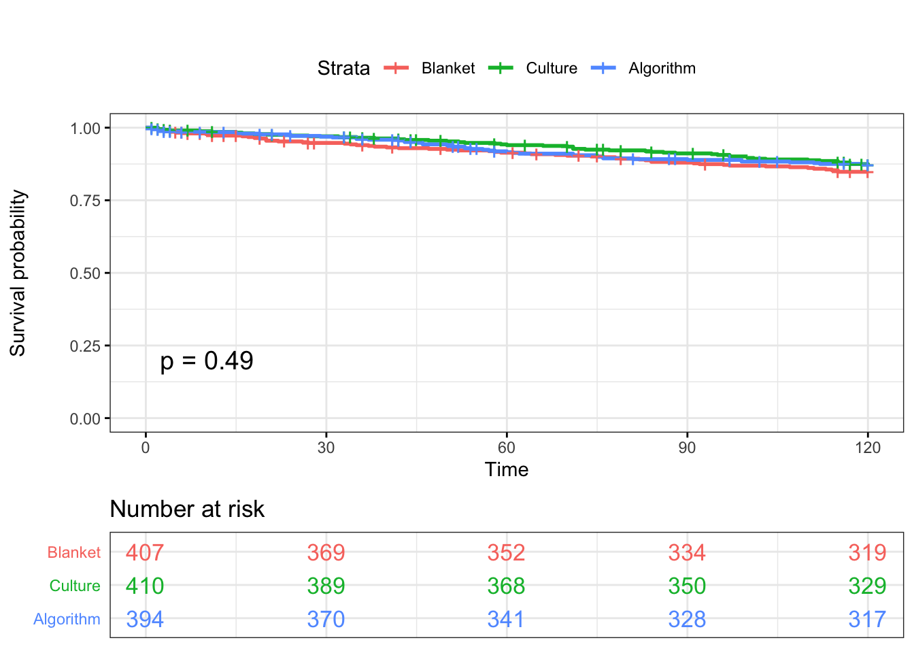
Log-Rank test
survdiff(Surv(CMTAR, CM) ~ Tx,data=SDCTCOW,rho=0)## Call:
## survdiff(formula = Surv(CMTAR, CM) ~ Tx, data = SDCTCOW, rho = 0)
##
## N Observed Expected (O-E)^2/E (O-E)^2/V
## Tx=Blanket 407 59 52 0.954 1.428
## Tx=Culture 410 50 54 0.298 0.454
## Tx=Algorithm 394 48 51 0.180 0.267
##
## Chisq= 1.4 on 2 degrees of freedom, p= 0.5
Model type: Cox proportional hazards analysis with farm included as a cluster variable (robust sandwich standard error estimator) to account for lack of indepedence.
Step 1: Identify potential confouders using a directed acyclic graph (DAG)
Step 2: Identify correlated variables using pearson and kendalls correlation coefficients
Step 3: Create model with all potential confounders
Step 4: Investigate if covariates meet proportional hazards assumption
Step 5: Investigate potential effect measure modification
Step 6: Remove unneccesary covariates in backwards stepwise fashion using 10% rule (i.e. if hazard ratio for algorithm or culture changes by >10% after removing the covariate, the covariate is retained in the model)
Step 7: Report final model
This is used to identify variables that could be confounders if they are not balanced between treatment groups.
library(DiagrammeR)
mermaid("graph LR
T(Treatment)-->U(Clinical mastitis)
A(Age)-->T
P(Parity)-->T
M(Yield at dry-off)-->T
S(SCC during prev lactation)-->T
C(CM in prev lact)-->T
A-->U
P-->U
M-->U
S-->U
C-->U
C-->M
P-->C
P-->S
P-->M
A-->P
A-->C
A-->S
A-->M
M-->S
C-->S
style A fill:#FFFFFF, stroke-width:0px
style T fill:#FFFFFF, stroke-width:2px
style P fill:#FFFFFF, stroke-width:0px
style M fill:#FFFFFF, stroke-width:0px
style S fill:#FFFFFF, stroke-width:0px
style C fill:#FFFFFF, stroke-width:0px
style I fill:#FFFFFF, stroke-width:0px
style U fill:#FFFFFF, stroke-width:2px
")Parity [“Parity”]
Age [“Age”]
Yield at most recent test before dry off [“DOMY”]
Somatic cell count at last herd test during previous lactation [“DOSCC” or “PrevSCCHi”] <- likely to be correlated
Clinical mastitis in previous lactation [“PrevCM”]
Cox proportional hazards regression for clinical mastitis (1-120 DIM)
Cows that did not calve or that had long/short dry periods are excluded. Cows with clinical mastitis prior to calving are included.
Reasons for R censor = 120 DIM or culling/death
SR <- coxph(Surv(CMTAR, CM) ~ Parity + DOMY + DOSCC + PrevCM + Tx + cluster(FARMID), data=SDCTCOW)
coxph(Surv(CMTAR, CM) ~ Parity + DOMY + DOSCC + PrevCM + Tx + cluster(FARMID), data=SDCTCOW)## Call:
## coxph(formula = Surv(CMTAR, CM) ~ Parity + DOMY + DOSCC + PrevCM +
## Tx + cluster(FARMID), data = SDCTCOW)
##
## coef exp(coef) se(coef) robust se z p
## Parity2 0.262972 1.300790 0.198272 0.127747 2.059 0.0395
## Parity3 0.328493 1.388873 0.204918 0.292867 1.122 0.2620
## DOMY -0.006115 0.993904 0.010031 0.018794 -0.325 0.7449
## DOSCC 0.028361 1.028767 0.076123 0.105980 0.268 0.7890
## PrevCM1 0.357508 1.429761 0.212265 0.228486 1.565 0.1177
## TxCulture -0.193527 0.824048 0.192911 0.177916 -1.088 0.2767
## TxAlgorithm -0.173991 0.840304 0.194505 0.162762 -1.069 0.2851
##
## Likelihood ratio test=10.21 on 7 df, p=0.1771
## n= 1211, number of events= 157#tidy(coxph(Surv(CMTAR, CM) ~ Tx + cluster(FARMID), data=SDCTCOW))
Parity, Tx and DOSCC violate the assumption of proportional hazards
SR <- cox.zph(SR)
SR## rho chisq p
## Parity2 -0.1172 4.313 0.037831
## Parity3 -0.1245 11.662 0.000638
## DOMY 0.0370 1.843 0.174616
## DOSCC 0.1043 5.489 0.019134
## PrevCM1 0.0207 0.394 0.530189
## TxCulture 0.1564 9.946 0.001612
## TxAlgorithm 0.0207 0.480 0.488505
## GLOBAL NA 14.007 0.051053
Schoenfield residual plots to assess assumption of proportional hazards.
ggcoxzph(SR,var = c("TxCulture","TxAlgorithm"))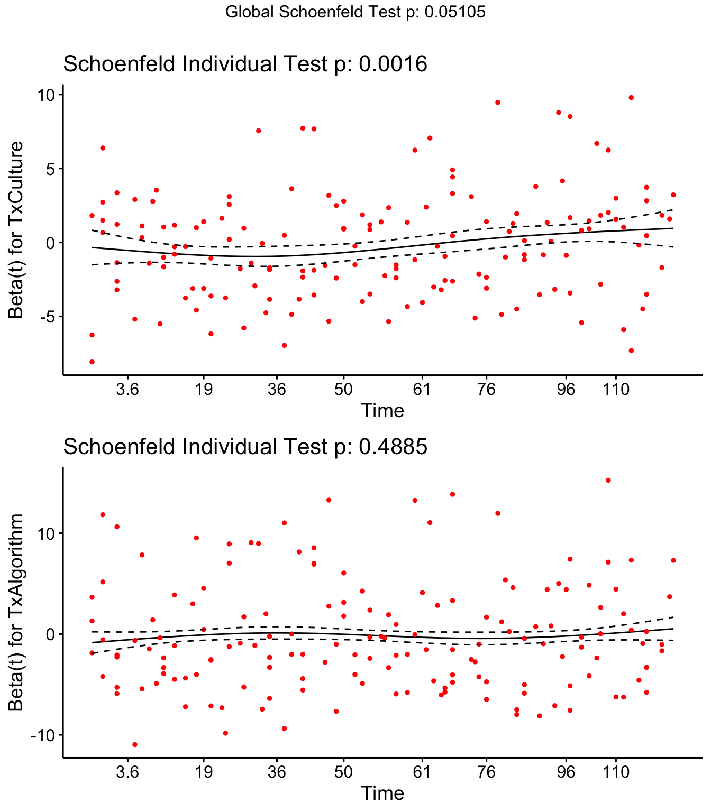
ggcoxzph(SR,var = c("DOSCC", "DOMY"))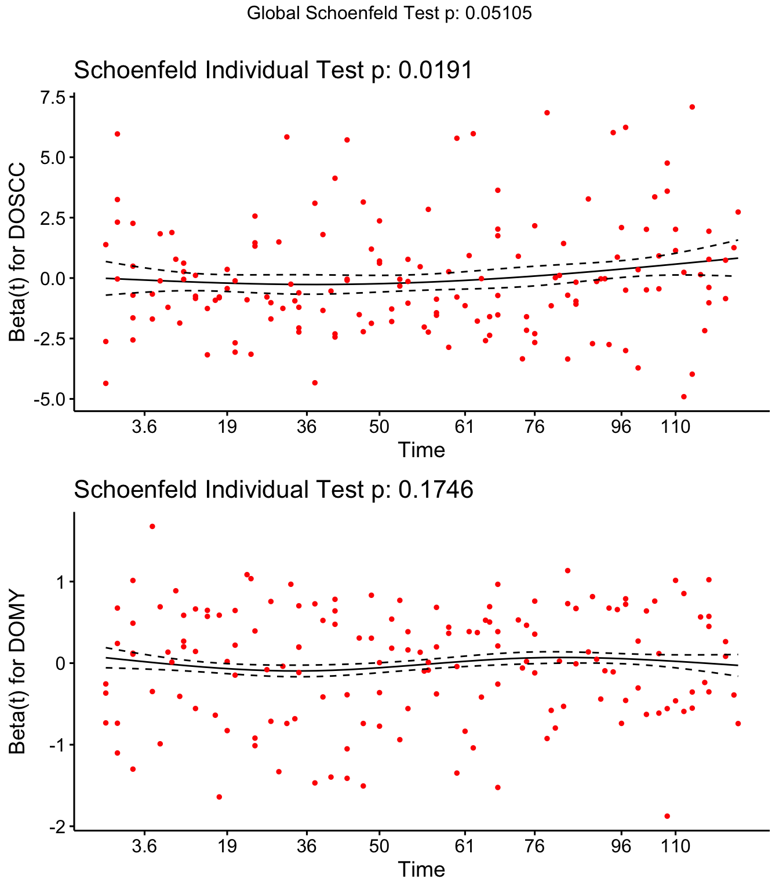
ggcoxzph(SR,var = c("Parity2","Parity3"))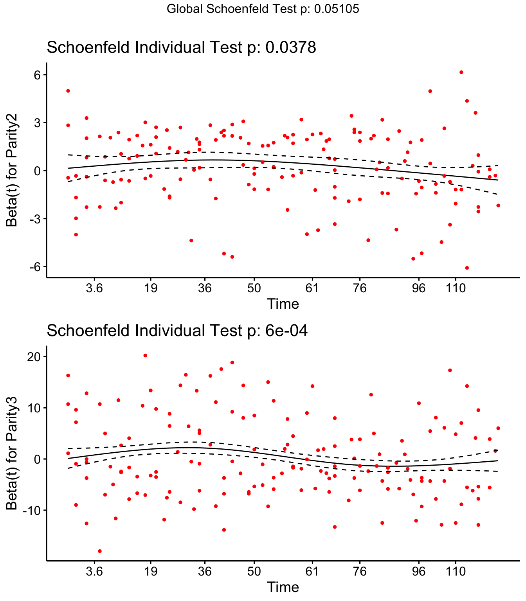
ggcoxzph(SR,var = c("PrevCM1"))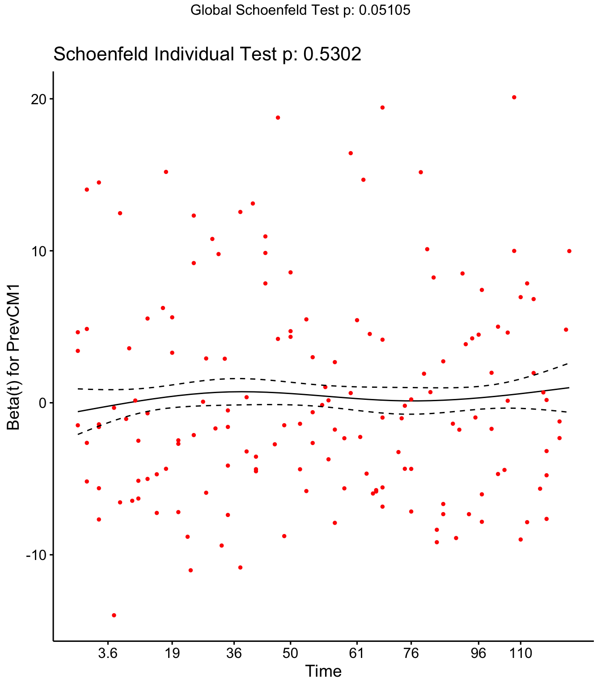
I will deal with these covariates using stratification (i.e. fitting seperate baseline hazards)
I must create categorical variables to allow for this (not shown here).
Dry off milk yield [“DOMY”] -> median split (“DOMYcat” = 0 / 1).
Dry off SCC - split at 200,000 cells (subclinical mastitis [“DOSCM”] = 0 / 1)
Show new variables
SDCTCOWcheck <- SDCTCOW %>% select(Tx,CM,CMTAR,Cull2,Cull2TAR,DOSCC,DOSCM,DOMY,DOMYcat,Parity,PrevCM)
head(SDCTCOWcheck)
Run new cox model with stratified variables
library(broom)
SR <- coxph(Surv(CMTAR, CM) ~ strata(Parity) + strata(DOMYcat) + strata(DOSCM) + PrevCM + Tx + cluster(FARMID), data=SDCTCOW)
tidy(coxph(Surv(CMTAR, CM) ~ strata(Parity) + strata(DOMYcat) + strata(DOSCM) + PrevCM + Tx + cluster(FARMID), data=SDCTCOW))
Repeat Schoenfeld residuals
Tx no longer p < 0.05, but is close to the threshold (p = 0.08).
SR <- cox.zph(SR)
SR## rho chisq p
## PrevCM1 0.0273 0.185 0.6674
## TxCulture 0.1393 3.094 0.0786
## TxAlgorithm 0.0442 0.419 0.5173
## GLOBAL NA 3.320 0.3449
Will split time into 1-60 and 61-120 DIM to see if this difference is meaningful.
Cox model 1-60 DIM
Beta coefficient for Culture = -0.43, Algorithm = -0.08
SR <- coxph(Surv(CMTAR60, CM60) ~ strata(Parity) + strata(DOMYcat) + strata(DOSCM) + PrevCM + Tx + cluster(FARMID), data=SDCTCOW)
tidy(coxph(Surv(CMTAR60, CM60) ~ strata(Parity) + strata(DOMYcat) + strata(DOSCM) + PrevCM + Tx + cluster(FARMID), data=SDCTCOW))
Cox model 61-120 DIM Beta coefficient for Culture = 0.008, Algorithm = -.401
SR <- coxph(Surv(CMTAR60120, CM60120) ~ strata(Parity) + strata(DOMYcat) + strata(DOSCM) + PrevCM + Tx + cluster(FARMID), data=SDCTCOW)
tidy(coxph(Surv(CMTAR60120, CM60120) ~ strata(Parity) + strata(DOMYcat) + strata(DOSCM) + PrevCM + Tx + cluster(FARMID), data=SDCTCOW))Decision: These differences aren’t sufficient in my opinion to warrant pursuing the 1-60, 61-120 DIM models. An average of the two is appropriate.
Unable to evluate interaction between Tx & FARMID using Cox regression - Bizzare SE’s, won’t converge.
mm0 <- coxph(Surv(CMTAR, CM) ~ Tx + FARMID + Tx:FARMID + PrevCM + strata(Parity) + strata(DOMYcat) + strata(DOSCM), data=SDCTCOW)
tidy(mm0)
Will use logistic regression to assess for interaction between Tx and farm: P > 0.05.
mm0 <- glm(CM ~ Tx*FARMID + PrevCM + Parity + DOMYcat + DOSCM, data=SDCTCOW, family=binomial)
car::Anova(mm0)Decision: No treatment by herd effect measure modification
Assess effect measure modification with previous clinical mastitis using Cox regression.
a <- coxph(Surv(CMTAR, CM) ~ factor(Tx)*factor(PrevCM) + strata(Parity) + cluster(FARMID) + strata(DOMYcat) + strata(DOSCM), data=SDCTCOW)
library(aod)
wald.test(b = coef(a), Sigma = vcov(a), Terms = 4:5)## Wald test:
## ----------
##
## Chi-squared test:
## X2 = 11.0, df = 2, P(> X2) = 0.004Wald test for interaction is p < 0.05.
Model output with interaction
mm0 <- coxph(Surv(CMTAR, CM) ~ Tx*PrevCM + strata(Parity) + strata(DOMYcat) + strata(DOSCM) + cluster(FARMID), data=SDCTCOW)
tidy(mm0)According to this interaction model, the HR (referent = Blanket Tx, no prev CM) for each group are:
Blanket:Prev0 = 1
Blanket:Prev1 = 2.1
Culture:PrevCM0 = 0.93
Culture:PrevCM1 = 0.97
Algorithm:PrevCM0 = 0.93
Algorithm:PrevCM1 = 1.14
This is a counter-intuitive result: hazards of clinical mastitis are higher in blanket cows with previous history of CM.
However, these effect estimates have wide confidence intervals, and this interaction model adds unnecessary complexity and does not change our conclusions.
Decision: Report main effects.
The order for removing covariates will be in increasing likelihood of being a confounder, which is based on my knowledge about the variables and their distribution in treatment groups.
This order will be: DOMYcat, DOSCM, Parity, PrevCM
Step 6a: Full model
mm0 <- tidy(coxph(Surv(CMTAR, CM) ~ strata(Parity) + strata(DOMYcat) + strata(DOSCM) + PrevCM + Tx + cluster(FARMID), data=SDCTCOW)) %>% select("term","estimate")
mm0$HR <- exp(mm0$estimate)
mm0
Step 6b: removing DOMYcat
mm0 <- tidy(coxph(Surv(CMTAR, CM) ~ strata(Parity) + strata(DOSCM) + PrevCM + Tx + cluster(FARMID), data=SDCTCOW))%>% select("term","estimate")
mm0$HR <- exp(mm0$estimate)
mm0Both HR (Culture and Algorithm) changed by <10%. DOMYcat stays out.
Step 6c: removing DOSCM
mm0 <- tidy(coxph(Surv(CMTAR, CM) ~ strata(Parity) + PrevCM + Tx + cluster(FARMID), data=SDCTCOW)) %>% select("term","estimate")
mm0$HR <- exp(mm0$estimate)
mm0Both HR changed by <10%. DOMYcat stays out.
Step 6d: removing Parity
mm0 <- tidy(coxph(Surv(CMTAR, CM) ~ PrevCM + Tx + cluster(FARMID), data=SDCTCOW)) %>% select("term","estimate")
mm0$HR <- exp(mm0$estimate)
mm0Both HR changed by <10%. Parity stays out.
Step 6e: removing PrevCM
mm0 <- tidy(coxph(Surv(CMTAR, CM) ~ Tx + cluster(FARMID), data=SDCTCOW)) %>% select("term","estimate")
mm0$HR <- exp(mm0$estimate)
mm0Both HR changed by <10%. PrevCM stays out.
No covariates included, as no evidence for confounding.
CoxCM <- tidy(coxph(Surv(CMTAR, CM) ~ Tx + cluster(FARMID), data=SDCTCOW))
CoxCM$HR <- exp(CoxCM$estimate)
CoxCM$LCL <- exp(CoxCM$conf.low)
CoxCM$UCL <- exp(CoxCM$conf.high)
CoxCM <- CoxCM %>% select(term,HR,LCL,UCL,robust.se,p.value)
CoxCM
SR <- coxph(Surv(CMTAR, CM) ~ Tx + cluster(FARMID), data=SDCTCOW)
cox.zph(SR)## rho chisq p
## TxCulture 0.12471 2.077891 0.149
## TxAlgorithm -0.00225 0.000429 0.983
## GLOBAL NA 2.596282 0.273SR <- cox.zph(SR)
ggcoxzph(SR,var = c("TxCulture","TxAlgorithm"))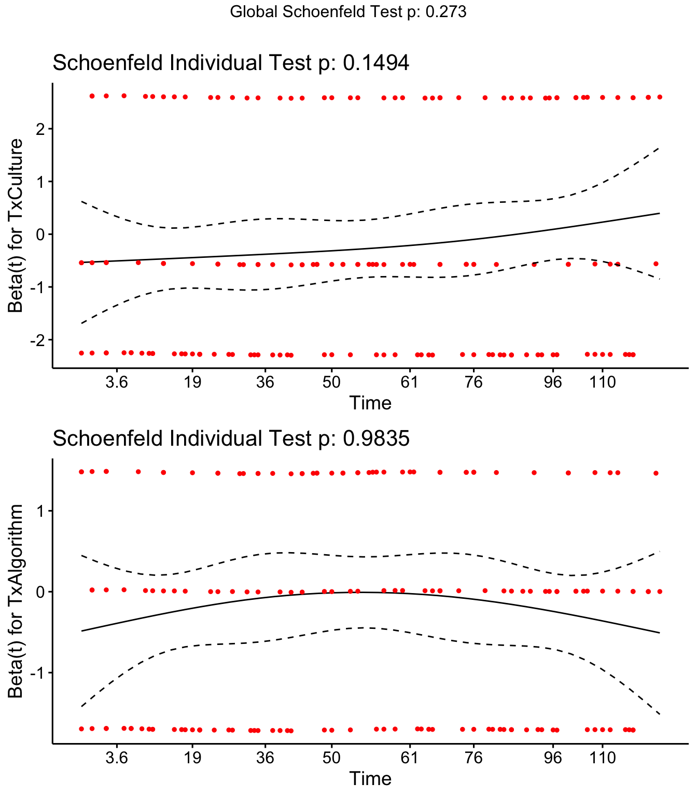 Sufficient evidence to use Cox model.
CoxCM <- coxph(Surv(CMTAR, CM) ~ Tx + Parity + cluster(FARMID), data=SDCTCOW) %>% tidy()
CoxCM$HR <- exp(CoxCM$estimate)
CoxCM$LCL <- exp(CoxCM$conf.low)
CoxCM$UCL <- exp(CoxCM$conf.high)
CoxCM <- CoxCM %>% select(term,HR,LCL,UCL,robust.se,p.value)
CoxCMEstimates are very similar to those found using 10% rule.
library(gmodels)
CrossTable(SDCTCOW$Tx,SDCTCOW$Cull2,prop.c=FALSE,prop.t=FALSE,prop.chisq = FALSE)##
##
## Cell Contents
## |-------------------------|
## | N |
## | N / Row Total |
## |-------------------------|
##
##
## Total Observations in Table: 1211
##
##
## | SDCTCOW$Cull2
## SDCTCOW$Tx | 0 | 1 | Row Total |
## -------------|-----------|-----------|-----------|
## Blanket | 363 | 44 | 407 |
## | 0.892 | 0.108 | 0.336 |
## -------------|-----------|-----------|-----------|
## Culture | 370 | 40 | 410 |
## | 0.902 | 0.098 | 0.339 |
## -------------|-----------|-----------|-----------|
## Algorithm | 352 | 42 | 394 |
## | 0.893 | 0.107 | 0.325 |
## -------------|-----------|-----------|-----------|
## Column Total | 1085 | 126 | 1211 |
## -------------|-----------|-----------|-----------|
##
## Kaplan Meier curve
KM <- survfit(Surv(Cull2TAR, Cull2) ~ Tx, data = SDCTCOW)
ggsurvplot(KM, data = SDCTCOW, title = "", pval = T, conf.int = F,risk.table.col = "Tx",risk.table = T, risk.table.y.text.col = TRUE , surv.plot.height = 5, legend.labs = c("Blanket","Culture","Algorithm"), tables.theme = theme_cleantable(), ggtheme = theme_bw())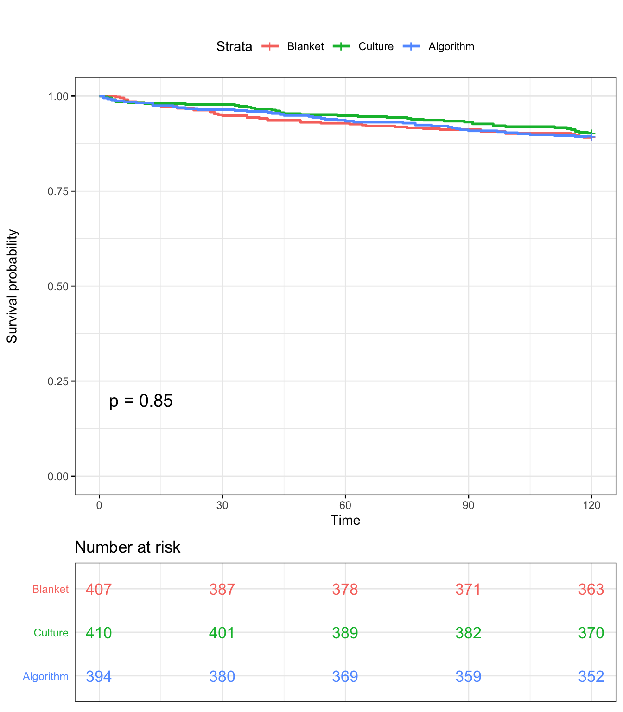
Log-Rank test
survdiff(Surv(Cull2TAR, Cull2) ~ Tx,data=SDCTCOW,rho=0)## Call:
## survdiff(formula = Surv(Cull2TAR, Cull2) ~ Tx, data = SDCTCOW,
## rho = 0)
##
## N Observed Expected (O-E)^2/E (O-E)^2/V
## Tx=Blanket 407 44 42.1 0.0891 0.134
## Tx=Culture 410 40 43.0 0.2128 0.323
## Tx=Algorithm 394 42 40.9 0.0290 0.043
##
## Chisq= 0.3 on 2 degrees of freedom, p= 0.8
Model type: Cox proportional hazards analysis with farm included as a cluster variable to account for lack of indepedence.
Step 1: Identify potential confouders using a directed acyclic graph (DAG)
Step 2: Identify correlated variables using pearson and kendalls correlation coefficients
Step 3: Create model with all potential confounders
Step 4: Investigate if covariates meet proportional hazards assumption
Step 5: Investigate potential effect measure modification
Step 6: Remove unneccesary covariates in backwards stepwise fashion using 10% rule (i.e. if HR changes by >10% after removal of covariate, the covariate is retained in the model)
Step 7: Report final model
library(DiagrammeR)
mermaid("graph LR
T(Treatment)-->U(Culling or Death)
A(Age)-->T
P(Parity)-->T
M(Yield at dry-off)-->T
S(SCC during prev lactation)-->T
C(CM in prev lact)-->T
A-->U
P-->U
M-->U
S-->U
C-->U
C-->M
P-->C
P-->S
P-->M
A-->P
A-->C
A-->S
A-->M
M-->S
C-->S
style A fill:#FFFFFF, stroke-width:0px
style T fill:#FFFFFF, stroke-width:2px
style P fill:#FFFFFF, stroke-width:0px
style M fill:#FFFFFF, stroke-width:0px
style S fill:#FFFFFF, stroke-width:0px
style C fill:#FFFFFF, stroke-width:0px
style I fill:#FFFFFF, stroke-width:0px
style U fill:#FFFFFF, stroke-width:2px
")Parity [“Parity”]. Will not offer Age [“Age”] as it is highly correlated.
Yield at most recent test before dry off [“DOMY”]
Somatic cell count at last herd test during previous lactation [“DOSCC”] <- will not offer PrevSCCHI as it was correlated with DOSCC
Clinical mastitis in previous lactation [“PrevCM”]
Cows that did not calve are excluded (left censored)
Reason for R censor = 120 DIM
library(broom)
library(survival)
coxph(Surv(Cull2TAR, Cull2) ~ Parity + DOMY + DOSCC + PrevCM + Tx + cluster(FARMID), data=SDCTCOW)## Call:
## coxph(formula = Surv(Cull2TAR, Cull2) ~ Parity + DOMY + DOSCC +
## PrevCM + Tx + cluster(FARMID), data = SDCTCOW)
##
## coef exp(coef) se(coef) robust se z p
## Parity2 0.39524 1.48475 0.25866 0.21257 1.859 0.06298
## Parity3 1.13923 3.12436 0.23351 0.23115 4.929 8.29e-07
## DOMY -0.01446 0.98564 0.01107 0.01471 -0.983 0.32560
## DOSCC 0.08981 1.09396 0.08514 0.05241 1.714 0.08660
## PrevCM1 0.26788 1.30719 0.22819 0.09322 2.874 0.00406
## TxCulture -0.09850 0.90619 0.21940 0.21233 -0.464 0.64271
## TxAlgorithm 0.01074 1.01079 0.21583 0.23312 0.046 0.96327
##
## Likelihood ratio test=44.51 on 7 df, p=1.706e-07
## n= 1211, number of events= 126
Both DOSCC and DOMY don’t meet the assumption of proportional hazards
SR <- cox.zph(coxph(Surv(Cull2TAR, Cull2) ~ Parity + DOMY + DOSCC + PrevCM + Tx + cluster(FARMID), data=SDCTCOW))
SR## rho chisq p
## Parity2 -0.1157 2.607 0.10639
## Parity3 -0.0343 0.209 0.64753
## DOMY 0.1521 7.402 0.00652
## DOSCC 0.1462 5.471 0.01934
## PrevCM1 -0.1220 2.530 0.11172
## TxCulture 0.1222 3.313 0.06872
## TxAlgorithm 0.0815 1.396 0.23741
## GLOBAL NA 8.182 0.31686
Schoenfield residual plots
ggcoxzph(SR,var = c("TxCulture","TxAlgorithm"))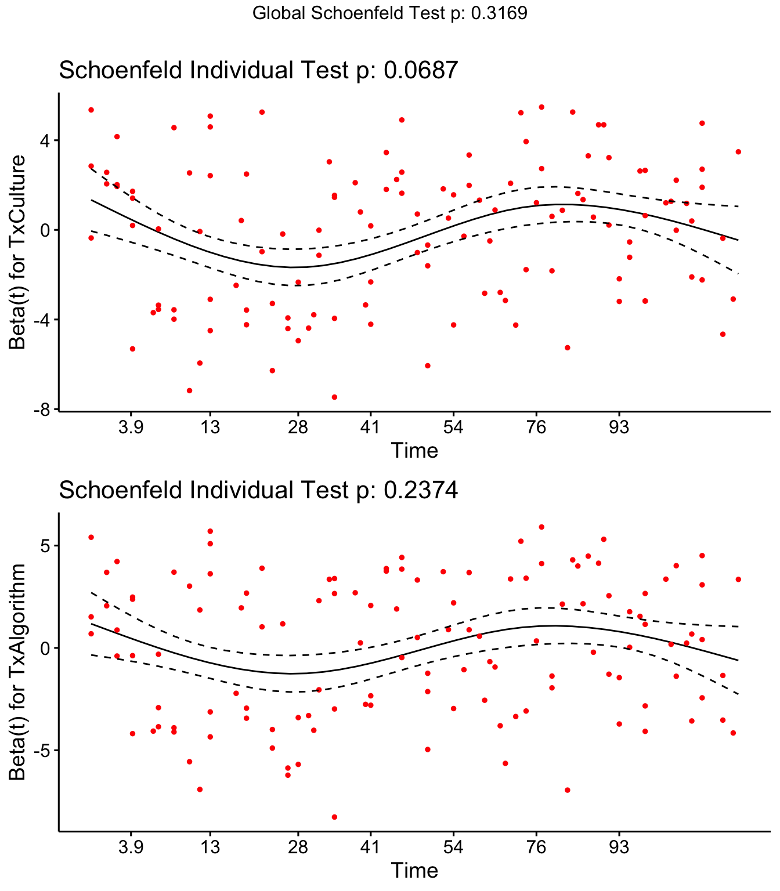
DOSCC and DOMY don’t meet the assumption of proportional hazards
ggcoxzph(SR,var = c("DOSCC", "DOMY"))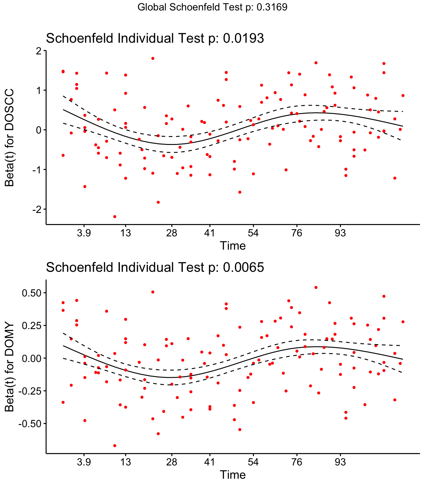
ggcoxzph(SR,var = c("Parity2","Parity3"))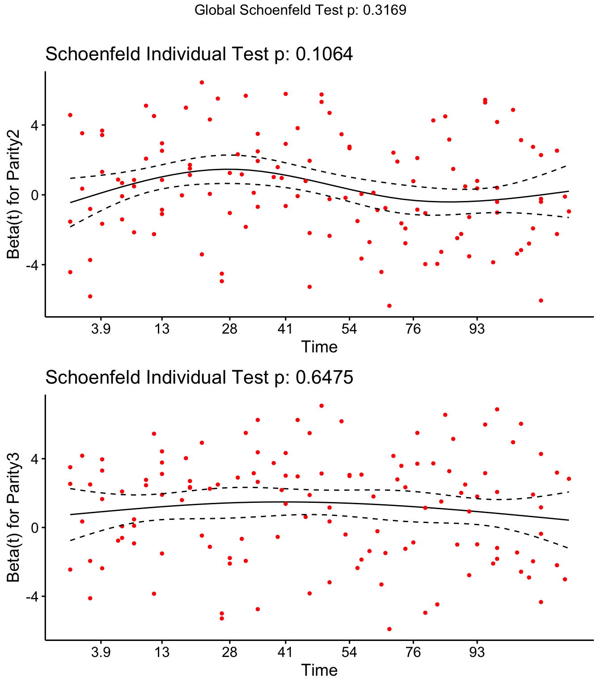
ggcoxzph(SR,var = c("PrevCM1"))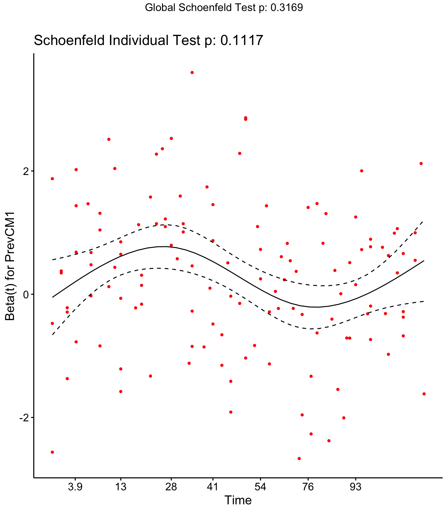
Refit cox model with seperate baselines (stratified) for DOMY and DOSCC.
No evidence of other time-varying covariates or predictors (Tx).
SR <- coxph(Surv(Cull2TAR, Cull2) ~ Parity + strata(DOMYcat) + strata(DOSCM) + PrevCM + Tx + cluster(FARMID), data=SDCTCOW)
SR <- cox.zph(SR)
SR## rho chisq p
## Parity2 -0.05884 0.412749 0.521
## Parity3 -0.00113 0.000217 0.988
## PrevCM1 -0.06962 0.500950 0.479
## TxCulture 0.10086 1.689182 0.194
## TxAlgorithm 0.07741 1.091294 0.296
## GLOBAL NA 2.214228 0.819
Tx : FARMID - could not assess this using Cox regression as model did not converge or reported unusually large SEs for some interaction terms.
SR <- coxph(Surv(Cull2TAR, Cull2) ~ Tx*FARMID + Parity + PrevCM + Parity + strata(DOMYcat) + strata(DOSCM), data=SDCTCOW)
tidy(SR)
I will assess effect Tx:farm interaction using logistic regression:
Wald test for interaction term was P > 0.05.
mm0 <- glm(CM ~ Tx*FARMID + Parity + PrevCM + Parity + DOMYcat + DOSCM, data=SDCTCOW)
car::Anova(mm0)
Assess for other interactions using Wald testfrom Cox regression.
Wald test was P > 0.05 for Tx:PrevCM interaction
mm0 <- coxph(Surv(Cull2TAR, Cull2) ~ Tx*PrevCM + Parity + strata(DOMYcat) + strata(DOSCM) + cluster(FARMID), data=SDCTCOW)
summary(mm0)## Call:
## coxph(formula = Surv(Cull2TAR, Cull2) ~ Tx * PrevCM + Parity +
## strata(DOMYcat) + strata(DOSCM) + cluster(FARMID), data = SDCTCOW)
##
## n= 1211, number of events= 126
##
## coef exp(coef) se(coef) robust se z Pr(>|z|)
## TxCulture -0.02411 0.97618 0.24667 0.23595 -0.102 0.9186
## TxAlgorithm 0.05495 1.05649 0.24266 0.27674 0.199 0.8426
## PrevCM1 0.49435 1.63943 0.36416 0.20400 2.423 0.0154
## Parity2 0.41575 1.51550 0.25731 0.21398 1.943 0.0520
## Parity3 1.17829 3.24881 0.23075 0.25675 4.589 4.45e-06
## TxCulture:PrevCM1 -0.40970 0.66385 0.53890 0.33877 -1.209 0.2265
## TxAlgorithm:PrevCM1 -0.21937 0.80303 0.53502 0.70719 -0.310 0.7564
##
## TxCulture
## TxAlgorithm
## PrevCM1 *
## Parity2 .
## Parity3 ***
## TxCulture:PrevCM1
## TxAlgorithm:PrevCM1
## ---
## Signif. codes: 0 '***' 0.001 '**' 0.01 '*' 0.05 '.' 0.1 ' ' 1
##
## exp(coef) exp(-coef) lower .95 upper .95
## TxCulture 0.9762 1.0244 0.6147 1.550
## TxAlgorithm 1.0565 0.9465 0.6142 1.817
## PrevCM1 1.6394 0.6100 1.0991 2.445
## Parity2 1.5155 0.6598 0.9964 2.305
## Parity3 3.2488 0.3078 1.9642 5.374
## TxCulture:PrevCM1 0.6638 1.5064 0.3417 1.290
## TxAlgorithm:PrevCM1 0.8030 1.2453 0.2008 3.211
##
## Concordance= 0.64 (se = 0.03 )
## Likelihood ratio test= 33.79 on 7 df, p=2e-05
## Wald test = 1281 on 7 df, p=<2e-16
## Score (logrank) test = 36.55 on 7 df, p=6e-06, Robust = 7 p=0.4
##
## (Note: the likelihood ratio and score tests assume independence of
## observations within a cluster, the Wald and robust score tests do not).wald.test(b = coef(mm0), Sigma = vcov(mm0), Terms = 6:7)## Wald test:
## ----------
##
## Chi-squared test:
## X2 = 1.6, df = 2, P(> X2) = 0.46
Wald test was P < 0.05 for Tx:Parity interaction .
mm0 <- coxph(Surv(Cull2TAR, Cull2) ~ Tx*Parity + PrevCM + strata(DOMYcat) + strata(DOSCM) + cluster(FARMID), data=SDCTCOW)
summary(mm0)## Call:
## coxph(formula = Surv(Cull2TAR, Cull2) ~ Tx * Parity + PrevCM +
## strata(DOMYcat) + strata(DOSCM) + cluster(FARMID), data = SDCTCOW)
##
## n= 1211, number of events= 126
##
## coef exp(coef) se(coef) robust se z Pr(>|z|)
## TxCulture 0.5382 1.7130 0.5005 0.4124 1.305 0.191869
## TxAlgorithm 0.5758 1.7786 0.5080 0.5537 1.040 0.298327
## Parity2 0.8960 2.4498 0.4961 0.4546 1.971 0.048749
## Parity3 1.7523 5.7680 0.4572 0.4022 4.357 1.32e-05
## PrevCM1 0.3018 1.3522 0.2277 0.1047 2.882 0.003946
## TxCulture:Parity2 -0.6590 0.5173 0.6640 0.7136 -0.924 0.355691
## TxAlgorithm:Parity2 -0.6252 0.5352 0.6531 0.6359 -0.983 0.325518
## TxCulture:Parity3 -0.8959 0.4082 0.5861 0.2552 -3.511 0.000446
## TxAlgorithm:Parity3 -0.7392 0.4775 0.5900 0.4252 -1.739 0.082111
##
## TxCulture
## TxAlgorithm
## Parity2 *
## Parity3 ***
## PrevCM1 **
## TxCulture:Parity2
## TxAlgorithm:Parity2
## TxCulture:Parity3 ***
## TxAlgorithm:Parity3 .
## ---
## Signif. codes: 0 '***' 0.001 '**' 0.01 '*' 0.05 '.' 0.1 ' ' 1
##
## exp(coef) exp(-coef) lower .95 upper .95
## TxCulture 1.7130 0.5838 0.7633 3.8440
## TxAlgorithm 1.7786 0.5622 0.6009 5.2648
## Parity2 2.4498 0.4082 1.0049 5.9721
## Parity3 5.7680 0.1734 2.6224 12.6871
## PrevCM1 1.3522 0.7395 1.1014 1.6602
## TxCulture:Parity2 0.5173 1.9329 0.1278 2.0949
## TxAlgorithm:Parity2 0.5352 1.8686 0.1539 1.8610
## TxCulture:Parity3 0.4082 2.4496 0.2476 0.6731
## TxAlgorithm:Parity3 0.4775 2.0943 0.2075 1.0987
##
## Concordance= 0.651 (se = 0.025 )
## Likelihood ratio test= 35.95 on 9 df, p=4e-05
## Wald test = 89593 on 9 df, p=<2e-16
## Score (logrank) test = 38.57 on 9 df, p=1e-05, Robust = 7 p=0.6
##
## (Note: the likelihood ratio and score tests assume independence of
## observations within a cluster, the Wald and robust score tests do not).wald.test(b = coef(mm0), Sigma = vcov(mm0), Terms = 6:9)## Wald test:
## ----------
##
## Chi-squared test:
## X2 = 658.3, df = 4, P(> X2) = 0.0
Investigate potential effect measure modification by doing stratified models
Parity = 1 Frequency table
table(SDCTCOW$Tx[SDCTCOW$Parity==1],SDCTCOW$Cull2[SDCTCOW$Parity==1])##
## 0 1
## Blanket 152 6
## Culture 173 12
## Algorithm 156 11
mm0 <- coxph(Surv(Cull2TAR, Cull2) ~ Tx + PrevCM + strata(DOMYcat) + strata(DOSCM) + cluster(FARMID), data=SDCTCOW[SDCTCOW$Parity==1,]) %>% tidy()
mm0$HR <- exp(mm0$estimate)
mm0$LCL <- exp(mm0$conf.low)
mm0$UCL <- exp(mm0$conf.high)
mm0 %>% select("term","HR","LCL","UCL")
Frequency table
table(SDCTCOW$Tx[SDCTCOW$Parity==2],SDCTCOW$Cull2[SDCTCOW$Parity==2])##
## 0 1
## Blanket 120 13
## Culture 99 9
## Algorithm 112 11mm0 <- coxph(Surv(Cull2TAR, Cull2) ~ Tx + PrevCM + strata(DOMYcat) + strata(DOSCM) + cluster(FARMID), data=SDCTCOW[SDCTCOW$Parity==2,]) %>% tidy()
mm0$HR <- exp(mm0$estimate)
mm0$LCL <- exp(mm0$conf.low)
mm0$UCL <- exp(mm0$conf.high)
mm0 %>% select("term","HR","LCL","UCL")
Frequency table
table(SDCTCOW$Tx[SDCTCOW$Parity==3],SDCTCOW$Cull2[SDCTCOW$Parity==3])##
## 0 1
## Blanket 91 25
## Culture 98 19
## Algorithm 84 20mm0 <- coxph(Surv(Cull2TAR, Cull2) ~ Tx + PrevCM + strata(DOMYcat) + strata(DOSCM) + cluster(FARMID), data=SDCTCOW[SDCTCOW$Parity==3,]) %>% tidy
mm0$HR <- exp(mm0$estimate)
mm0$LCL <- exp(mm0$conf.low)
mm0$UCL <- exp(mm0$conf.high)
mm0 %>% select("term","HR","LCL","UCL")This finding suggests that potential culling risks associated with SDCT may be higher in parity 1 cows than in multiparous animals. However these HR estimates in all 3 parity groups are imprecise (wide confidence intervals) because of a small number of culling/death events. For example, in lactation 1 animals: 6 in BDCT, 11 in Algorithm and 12 in Culture. Therefore, this difference in effects across levels of parity may be due to chance alone, and not worth investigating too closely.
Decision: Report main effects.
The order for removing covariates will be in increasing likelihood of being a confounder, which is based on my knowledge about the variables and their distribution in treatment groups.
This order will be: DOMYcat, DOSCM, PrevCM, Parity
Step 6a: Full model
mm0 <- coxph(Surv(Cull2TAR, Cull2) ~ Tx + PrevCM + Parity + strata(DOMYcat) + strata(DOSCM) + cluster(FARMID), data=SDCTCOW) %>% tidy() %>% select("term","estimate")
mm0$HR <- exp(mm0$estimate)
mm0
Step 6b: removing DOMYcat
mm0 <- coxph(Surv(Cull2TAR, Cull2) ~ Tx + PrevCM + Parity + strata(DOSCM) + cluster(FARMID), data=SDCTCOW) %>% tidy() %>% select("term","estimate")
mm0$HR <- exp(mm0$estimate)
mm0HR for culture and algorithm didn’t change by >10%. DOMYcat stays out.
Step 6c: removing DOSCM
mm0 <- coxph(Surv(Cull2TAR, Cull2) ~ Tx + PrevCM + Parity + cluster(FARMID), data=SDCTCOW) %>% tidy() %>% select("term","estimate")
mm0$HR <- exp(mm0$estimate)
mm0HR changed by <10%. DOSCM stays out.
Step 6d: removing PrevCM
mm0 <- coxph(Surv(Cull2TAR, Cull2) ~ Tx + Parity + cluster(FARMID), data=SDCTCOW) %>% tidy() %>% select("term","estimate")
mm0$HR <- exp(mm0$estimate)
mm0HR changed by <10%. Leave PrevCM out.
Step 6e: removing Parity
mm0 <- coxph(Surv(Cull2TAR, Cull2) ~ Tx + cluster(FARMID), data=SDCTCOW) %>% tidy() %>% select("term","estimate")
mm0$HR <- exp(mm0$estimate)
mm0HR changed by <10%. Parity stays out.
No covariates included, as no evidence for confounding.
CoxCull <- coxph(Surv(Cull2TAR, Cull2) ~ Tx + cluster(FARMID), data=SDCTCOW) %>% tidy()
CoxCull$HR <- exp(CoxCull$estimate)
CoxCull$LCL <- exp(CoxCull$conf.low)
CoxCull$UCL <- exp(CoxCull$conf.high)
CoxCull <- CoxCull %>% select(term,HR,LCL,UCL,robust.se,p.value)
CoxCull
SR <- coxph(Surv(Cull2TAR, Cull2) ~ Tx + cluster(FARMID), data=SDCTCOW)
cox.zph(SR)## rho chisq p
## TxCulture 0.1100 1.52 0.217
## TxAlgorithm 0.0951 1.12 0.290
## GLOBAL NA 1.53 0.466SR <- cox.zph(SR)
ggcoxzph(SR,var = c("TxCulture","TxAlgorithm"))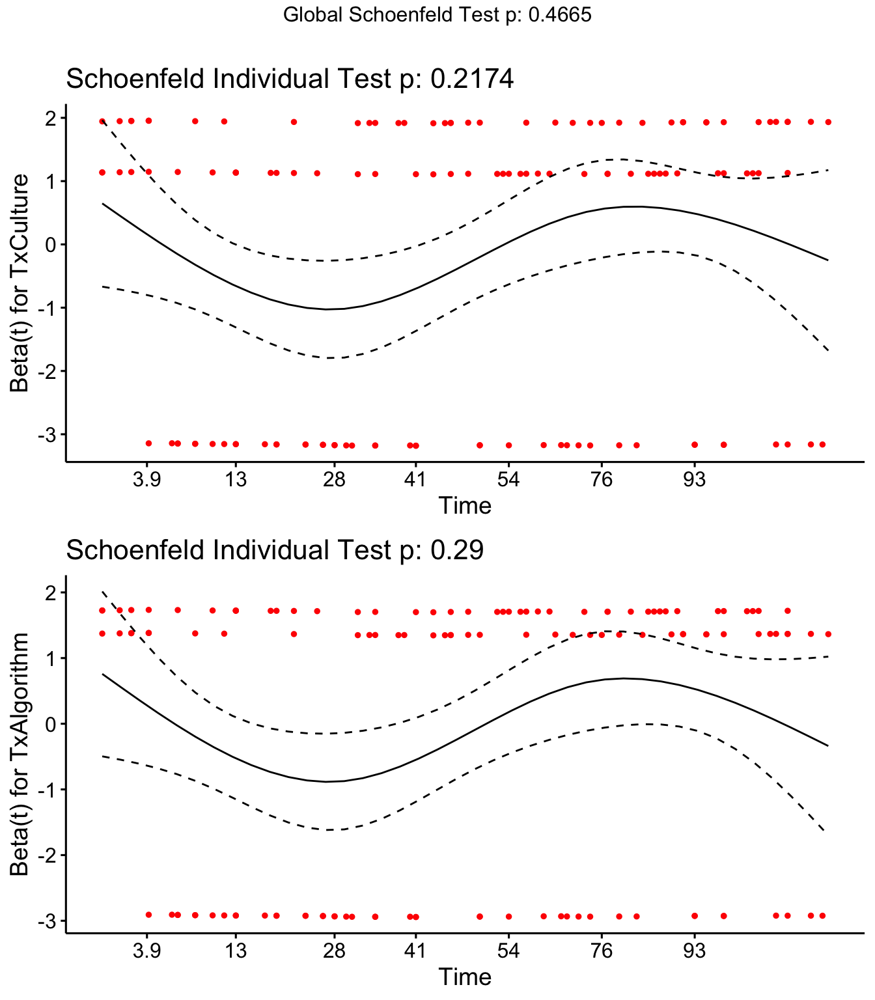
CoxCull <- coxph(Surv(CullTAR, Cull2) ~ Tx + Parity + DOSCC + PrevCM + cluster(FARMID), data=SDCTCOW) %>% tidy()
CoxCull$HR <- exp(CoxCull$estimate)
CoxCull$LCL <- exp(CoxCull$conf.low)
CoxCull$UCL <- exp(CoxCull$conf.high)
CoxCull <- CoxCull %>% select(term,HR,LCL,UCL,robust.se,p.value)
CoxCullEstimates are similar to 10% rule based approach
Dataset example
SDCTCOWDHI$Tx <-
factor(SDCTCOWDHI$Tx,
levels=c(0,1,2),
labels=c("Blanket",
"Culture",
"Algorithm"))
DHIcheck <- SDCTCOWDHI %>% select(Tx,CowID,FARMID,DIM,TestDIMcat20,LSCC,MY,Parity,PrevCM,DOMY,DOSCC)
head(DHIcheck, n=10)
DHIoutcome <- SDCTCOWDHI %>% select(SCC,MY,SCM)
DHIoutcome$logSCC <- log(DHIoutcome$SCC + 1)
#summarytools::dfSummary(DHIoutcome, style='grid')
print(summarytools::dfSummary(DHIoutcome, valid.col=FALSE, graph.magnif=0.8, varnumbers=F, style="grid"))## Data Frame Summary
##
## Dimensions: 3992 x 4
## Duplicates: 967
##
## +-----------+----------------------------+---------------------+------------------------+---------+
## | Variable | Stats / Values | Freqs (% of Valid) | Graph | Missing |
## +===========+============================+=====================+========================+=========+
## | SCC | Mean (sd) : 184.4 (678.2) | 608 distinct values | : | 3 |
## | [numeric] | min < med < max: | | : | (0.08%) |
## | | 0 < 39 < 9999 | | : | |
## | | IQR (CV) : 89 (3.7) | | : | |
## | | | | : | |
## +-----------+----------------------------+---------------------+------------------------+---------+
## | MY | Mean (sd) : 49.1 (10.5) | 149 distinct values | . : | 2 |
## | [numeric] | min < med < max: | | : : | (0.05%) |
## | | 0.9 < 49.4 < 93.4 | | : : : | |
## | | IQR (CV) : 13.2 (0.2) | | . : : : | |
## | | | | . : : : : : | |
## +-----------+----------------------------+---------------------+------------------------+---------+
## | SCM | Min : 0 | 0 : 3409 (85.5%) | IIIIIIIIIIIIIIIII | 3 |
## | [numeric] | Mean : 0.1 | 1 : 580 (14.5%) | II | (0.08%) |
## | | Max : 1 | | | |
## +-----------+----------------------------+---------------------+------------------------+---------+
## | logSCC | Mean (sd) : 3.9 (1.4) | 608 distinct values | : | 3 |
## | [numeric] | min < med < max: | | : . | (0.08%) |
## | | 0 < 3.7 < 9.2 | | . : : . | |
## | | IQR (CV) : 1.7 (0.3) | | : : : : | |
## | | | | : : : : : . | |
## +-----------+----------------------------+---------------------+------------------------+---------+Very little missing data. Will do complete case analysis.
Somatic cell count (log x 10,000 cells)
library(qualityTools)
qqPlot(log(SDCTCOWDHI$SCC+1))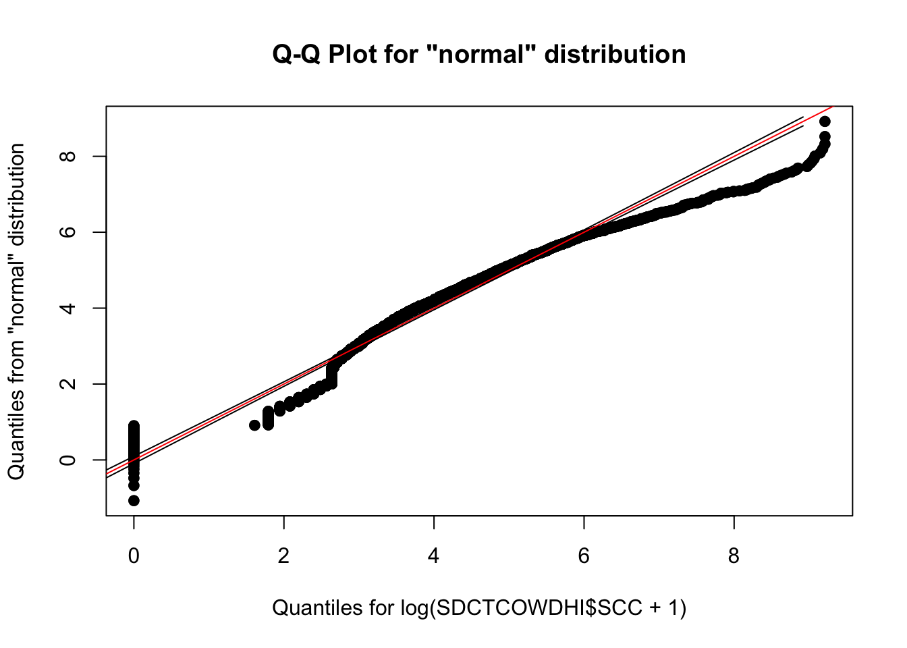
hist(log(SDCTCOWDHI$SCC+1))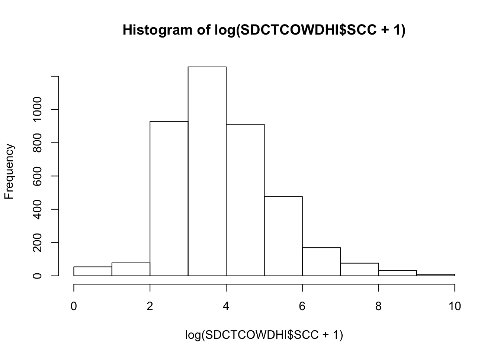
Milk yield (kg)
qqPlot(SDCTCOWDHI$MY)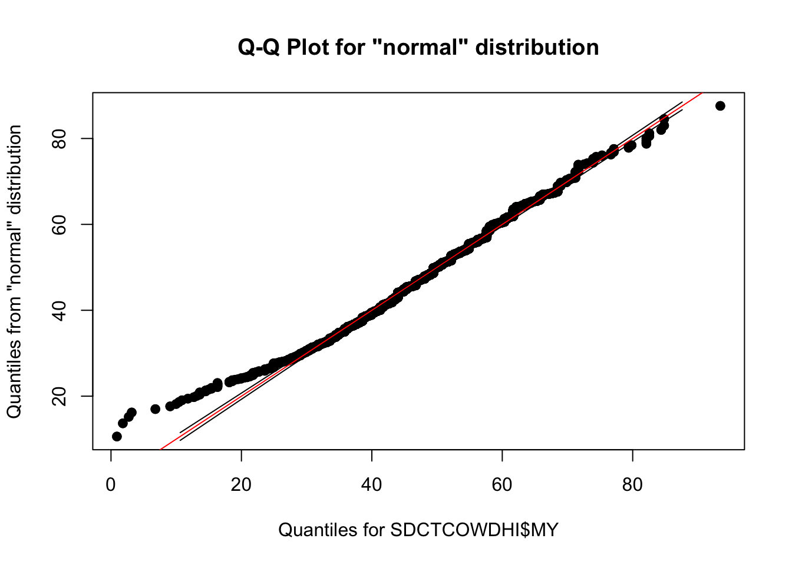
hist(SDCTCOWDHI$MY)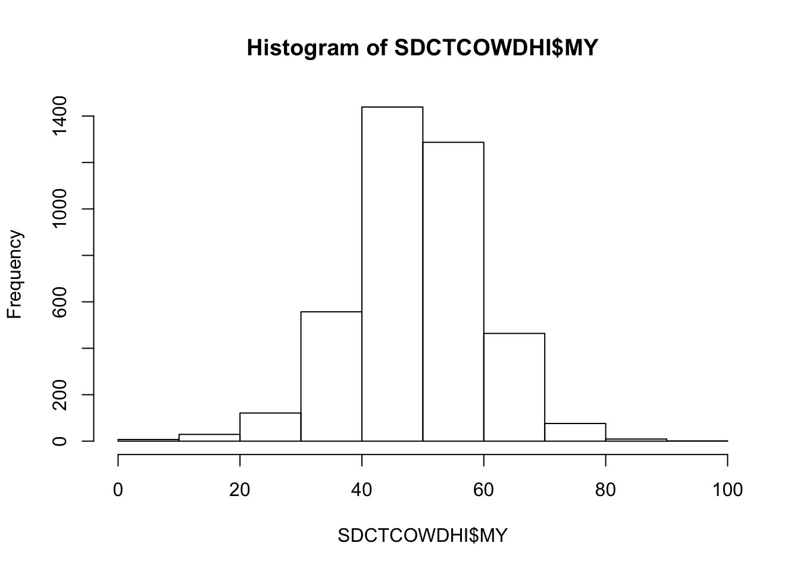
Model type: Linear mixed models, random intercepts for farm and cow will be fitted to account for repeated measures within cows, and clustering of cows within herds
Step 1: Identify potential confouders using a directed acyclic graph (DAG)
Step 2: Identify correlated variables using pearson and kendalls correlation coefficients
Step 3: Create model with all potential confounders
Step 4: Investigate potential effect measure modification
Step 5: Remove unneccesary covariates in backwards stepwise fashion using 10% rule (i.e. if estimated difference in SCC changes by >10% after removing the covariate, the covariate is retained in the model)
Step 6: Report final model
Step 7: Model diagnostics
library(DiagrammeR)
mermaid("graph LR
T(Treatment)-->U(SCC)
A(Age)-->T
P(Parity)-->T
M(Yield at dry-off)-->T
S(SCC during prev lactation)-->T
C(CM in prev lact)-->T
D(Days in milk at test)-->U
D-->T
A-->U
P-->U
M-->U
S-->U
C-->U
C-->M
P-->C
P-->S
P-->M
A-->P
A-->C
A-->S
A-->M
M-->S
C-->S
style A fill:#FFFFFF, stroke-width:0px
style T fill:#FFFFFF, stroke-width:2px
style P fill:#FFFFFF, stroke-width:0px
style M fill:#FFFFFF, stroke-width:0px
style S fill:#FFFFFF, stroke-width:0px
style C fill:#FFFFFF, stroke-width:0px
style I fill:#FFFFFF, stroke-width:0px
style D fill:#FFFFFF, stroke-width:0px
style U fill:#FFFFFF, stroke-width:2px
")Parity [“Parity”] <- Age not offered as highly correlated
Yield at most recent test before dry off [“DOMY”]
Somatic cell count at last herd test during previous lactation [“DOSCC”] <- PrevSCCHI not offered as correlated
Clinical mastitis in previous lactation [“PrevCM”]
Days in milk at herd test (category, 0-20 “10”, 21-40 “30” etc) [“TestDIMcat20”]
library(lme4)
mm0 <- lmer(LSCC ~ Tx + TestDIMcat20 + Parity + DOSCC + DOMY + PrevCM + (1|FARMID/CowID), data=SDCTCOWDHI)
summary(mm0)## Linear mixed model fit by REML ['lmerMod']
## Formula: LSCC ~ Tx + TestDIMcat20 + Parity + DOSCC + DOMY + PrevCM + (1 |
## FARMID/CowID)
## Data: SDCTCOWDHI
##
## REML criterion at convergence: 13110.3
##
## Scaled residuals:
## Min 1Q Median 3Q Max
## -5.5975 -0.4985 -0.1040 0.4340 3.9735
##
## Random effects:
## Groups Name Variance Std.Dev.
## CowID:FARMID (Intercept) 0.61791 0.7861
## FARMID (Intercept) 0.02027 0.1424
## Residual 1.14078 1.0681
## Number of obs: 3989, groups: CowID:FARMID, 1178; FARMID, 7
##
## Fixed effects:
## Estimate Std. Error t value
## (Intercept) 3.338254 0.204372 16.334
## TxCulture 0.047878 0.070138 0.683
## TxAlgorithm 0.074745 0.070822 1.055
## TestDIMcat2030 -0.576961 0.063393 -9.101
## TestDIMcat2050 -0.557223 0.060950 -9.142
## TestDIMcat2070 -0.394721 0.059969 -6.582
## TestDIMcat2090 -0.272158 0.065089 -4.181
## TestDIMcat20110 -0.084757 0.060209 -1.408
## Parity2 0.110743 0.070611 1.568
## Parity3 0.259957 0.074986 3.467
## DOSCC 0.139922 0.028350 4.935
## DOMY 0.002402 0.003983 0.603
## PrevCM1 0.361076 0.087707 4.117car::vif(mm0)## GVIF Df GVIF^(1/(2*Df))
## Tx 1.009521 2 1.002372
## TestDIMcat20 1.003238 5 1.000323
## Parity 1.141466 2 1.033631
## DOSCC 1.319455 1 1.148676
## DOMY 1.167395 1 1.080461
## PrevCM 1.050427 1 1.024903
Tx:FARM (P > 0.05)
mm0 <- lmer(LSCC ~ Tx*FARMID + Parity + TestDIMcat20 + DOSCC + DOMY + PrevCM + (1|CowID), data=SDCTCOWDHI)
car::Anova(mm0)
Tx:DIM category at herd test (P > 0.05)
mm0 <- lmer(LSCC ~ Tx*TestDIMcat20 + Parity + DOSCC + DOMY + PrevCM + (1|FARMID/CowID), data=SDCTCOWDHI)
car::Anova(mm0)
Tx:Parity (P > 0.05)
mm0 <- lmer(LSCC ~ Tx*Parity + TestDIMcat20 + DOSCC + DOMY + PrevCM + (1|FARMID/CowID), data=SDCTCOWDHI)
car::Anova(mm0)
Tx:PrevCM (P > 0.05)
mm0 <- lmer(LSCC ~ Tx*PrevCM + Parity + TestDIMcat20 + DOSCC + DOMY + (1|FARMID/CowID), data=SDCTCOWDHI)
car::Anova(mm0)
Tx:DOMY (P > 0.05)
mm0 <- lmer(LSCC ~ Tx*DOMY + PrevCM + Parity + TestDIMcat20 + DOSCC + (1|FARMID/CowID), data=SDCTCOWDHI)
car::Anova(mm0)The order for removing covariates will be in increasing likelihood of being a confounder, which is based on my knowledge about the variables and their distribution in treatment groups.
This order will be: DOMY, Parity, PrevCM, DOSCC
TestDIMcat20 will not be removed.
Step 5a: Full model
mm0 <- lmer(LSCC ~ Tx + PrevCM + Parity + TestDIMcat20 + DOSCC + DOMY + (1|FARMID/CowID), data=SDCTCOWDHI)
mm0 %>% tidy()
Step 5b: removing DOMY
mm0 <- lmer(LSCC ~ Tx + PrevCM + Parity + TestDIMcat20 + DOSCC + (1|FARMID/CowID), data=SDCTCOWDHI)
mm0%>% tidy()Changed by <10%. DOMY stays out.
Step 5b: removing Parity
mm0 <- lmer(LSCC ~ Tx + PrevCM + TestDIMcat20 + DOSCC + (1|FARMID/CowID), data=SDCTCOWDHI)
mm0 %>% tidy()Changed by <10%. Parity stays out.
Step 5c: removing PrevCM
mm0 <- lmer(LSCC ~ Tx + TestDIMcat20 + DOSCC + (1|FARMID/CowID), data=SDCTCOWDHI)
mm0 %>% tidy()Changed by >10%. PrevCM stays in.
Step 5d: removing DOSCC
mm0 <- lmer(LSCC ~ Tx + PrevCM + TestDIMcat20 + (1|FARMID/CowID), data=SDCTCOWDHI)
mm0 %>% tidy()Changed by > 10%. DOSCC stays in.
mm0 <- lmer(LSCC ~ Tx + PrevCM + DOSCC + TestDIMcat20 + (1|FARMID/CowID), data=SDCTCOWDHI)
mm0 %>% tidy(conf.int=TRUE)mm0 <- lmer(LSCC ~ 1 + (1|FARMID/CowID), data=SDCTCOWDHI)
summary(mm0)## Linear mixed model fit by REML ['lmerMod']
## Formula: LSCC ~ 1 + (1 | FARMID/CowID)
## Data: SDCTCOWDHI
##
## REML criterion at convergence: 13293.7
##
## Scaled residuals:
## Min 1Q Median 3Q Max
## -5.0159 -0.5107 -0.1062 0.4452 4.0999
##
## Random effects:
## Groups Name Variance Std.Dev.
## CowID:FARMID (Intercept) 0.65871 0.8116
## FARMID (Intercept) 0.03917 0.1979
## Residual 1.20343 1.0970
## Number of obs: 3989, groups: CowID:FARMID, 1178; FARMID, 7
##
## Fixed effects:
## Estimate Std. Error t value
## (Intercept) 3.86908 0.08308 46.57ICC (CowID) = 0.35 ICC (FARMID) = 0.02
Most clustering is happening within cow (repeated measures).
lmer(LSCC ~ Tx + Parity + PrevCM + DOSCC + (1|FARMID/CowID), data=SDCTCOWDHI) %>% summary()## Linear mixed model fit by REML ['lmerMod']
## Formula: LSCC ~ Tx + Parity + PrevCM + DOSCC + (1 | FARMID/CowID)
## Data: SDCTCOWDHI
##
## REML criterion at convergence: 13233.2
##
## Scaled residuals:
## Min 1Q Median 3Q Max
## -5.1671 -0.5100 -0.1122 0.4512 4.1458
##
## Random effects:
## Groups Name Variance Std.Dev.
## CowID:FARMID (Intercept) 0.59501 0.7714
## FARMID (Intercept) 0.01825 0.1351
## Residual 1.20377 1.0972
## Number of obs: 3989, groups: CowID:FARMID, 1178; FARMID, 7
##
## Fixed effects:
## Estimate Std. Error t value
## (Intercept) 3.12018 0.13160 23.710
## TxCulture 0.04063 0.06986 0.582
## TxAlgorithm 0.06227 0.07063 0.882
## Parity2 0.11211 0.07042 1.592
## Parity3 0.25300 0.07477 3.384
## PrevCM1 0.37041 0.08730 4.243
## DOSCC 0.13267 0.02635 5.035
##
## Correlation of Fixed Effects:
## (Intr) TxCltr TxAlgr Party2 Party3 PrvCM1
## TxCulture -0.298
## TxAlgorithm -0.270 0.498
## Parity2 -0.042 0.054 0.021
## Parity3 0.038 0.012 0.019 0.439
## PrevCM1 0.069 -0.019 0.013 -0.044 -0.100
## DOSCC -0.786 0.026 0.000 -0.223 -0.295 -0.143lmer(LSCC ~ Tx + Parity + PrevCM + DOSCC + (1|FARMID/CowID), data=SDCTCOWDHI) %>% car::Anova() %>% tidy()Estimates are very similar to 10% rule based approach.
Mean log SCC
library(emmeans)
mm0 <- lmer(LSCC ~ Tx + PrevCM + DOSCC + TestDIMcat20 + (1|FARMID/CowID), data=SDCTCOWDHI)
emm <- emmeans(mm0, ~Tx) %>% tidy()
emmGeometric mean SCC
mm0 <- lmer(LSCC ~ Tx + PrevCM + DOSCC + TestDIMcat20 + (1|FARMID/CowID), data=SDCTCOWDHI)
emm <- emmeans(mm0, ~Tx) %>% tidy()
emm$SCC <- exp(emm$estimate)
emm$LCL <- exp(emm$asymp.LCL)
emm$UCL <- exp(emm$asymp.UCL)
emm <- emm %>% subset(select=c(Tx,SCC,LCL,UCL))
emm
Reported as back-transformed estimated marginal means by herd test day, no interaction with test DIM
mm0 <- lmer(LSCC ~ Tx + TestDIMcat20 + DOSCC + PrevCM + (1|FARMID/CowID), data=SDCTCOWDHI)
atx <- c(10,30,50,70,90,110)
emm <- emmeans(mm0, ~Tx*TestDIMcat20, at=list(atx)) %>% tidy()
emm$SCC <- exp(emm$estimate)
emm$LCL <- exp(emm$asymp.LCL)
emm$UCL <- exp(emm$asymp.UCL)
emm <- emm %>% subset(select=c(Tx,TestDIMcat20,SCC,LCL,UCL))
curve <- ggplot(emm) + coord_cartesian(ylim = (c(0,100))) + aes(x=TestDIMcat20, y=SCC, group=Tx, colour=Tx) + geom_point() + geom_line(aes(colour=Tx,linetype=Tx)) + geom_ribbon(aes(ymin=emm$LCL, ymax=emm$UCL,colour=Tx,fill=Tx), linetype=0, alpha=0.1)
curve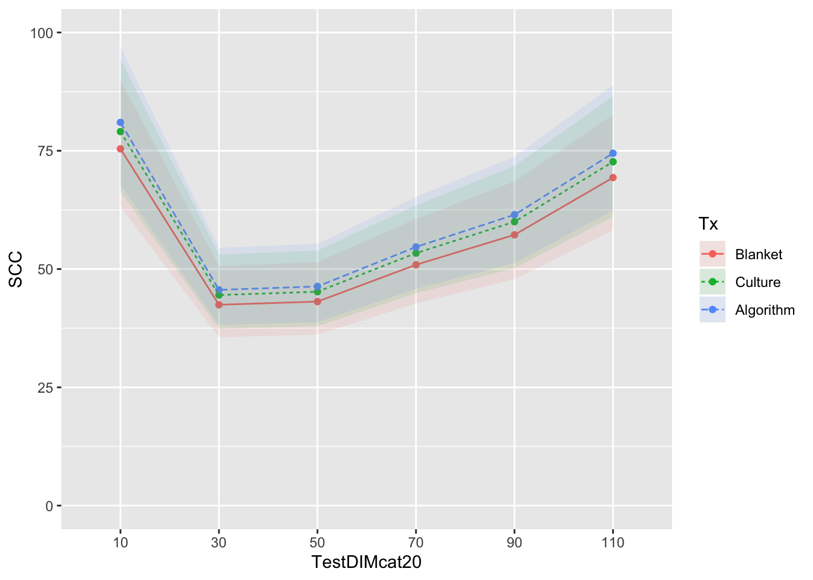
Reported as back-transformed estimated marginal means by herd test day, with interaction with test DIM
mm0 <- lmer(LSCC ~ Tx*TestDIMcat20 + PrevCM + DOSCC + (1|FARMID/CowID), data=SDCTCOWDHI)
atx <- c(10,30,50,70,90,110)
emm <- emmeans(mm0, ~Tx*TestDIMcat20, at=list(atx)) %>% tidy()
emm$SCC <- exp(emm$estimate)
emm$LCL <- exp(emm$asymp.LCL)
emm$UCL <- exp(emm$asymp.UCL)
emm <- emm %>% subset(select=c(Tx,TestDIMcat20,SCC,LCL,UCL))
curve <- ggplot(emm) + coord_cartesian(ylim = (c(0,100))) + aes(x=TestDIMcat20, y=SCC, group=Tx, colour=Tx) + geom_point() + geom_line(aes(colour=Tx,linetype=Tx)) + geom_ribbon(aes(ymin=emm$LCL, ymax=emm$UCL,colour=Tx,fill=Tx), linetype=0, alpha=0.1)
curve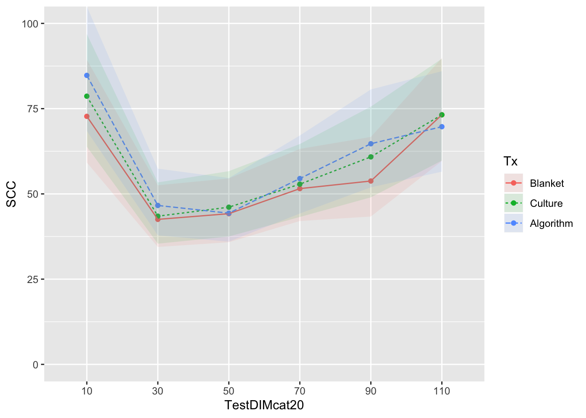
Checking homoskedasticity assumption (variance of residuals)
mm0 <- lmer(LSCC ~ Tx + TestDIMcat20 + (1|FARMID/CowID), data=SDCTCOWDHI)
ggplot(data.frame(eta=predict(mm0,type="link"),pearson=residuals(mm0,type="pearson")),
aes(x=eta,y=pearson)) +
geom_point() +
theme_bw()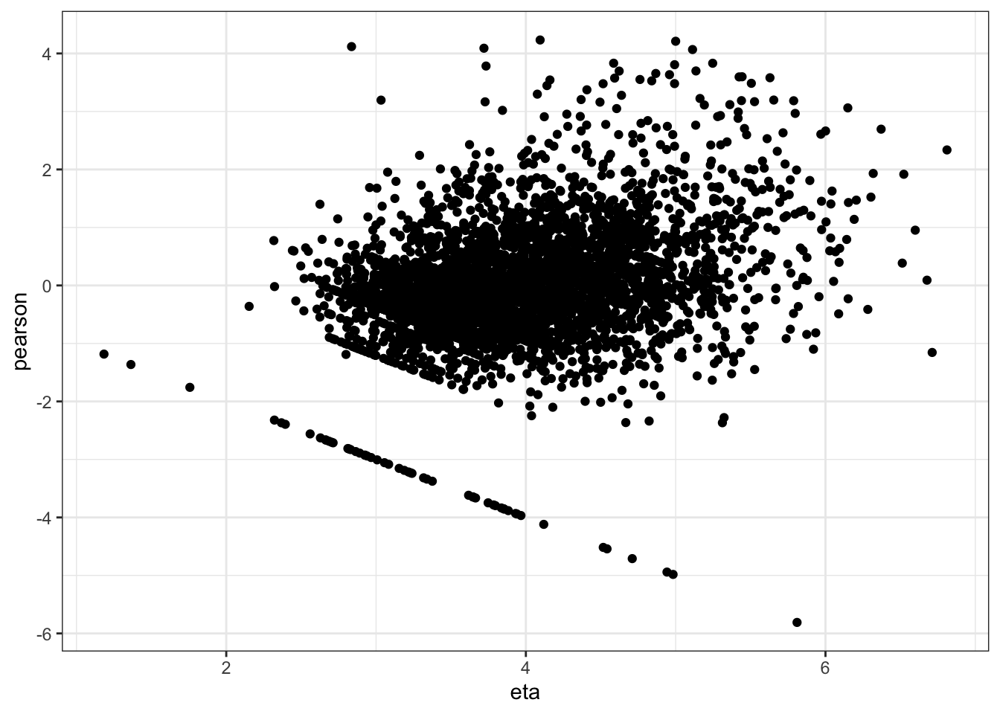
Checking normality of residuals
qqnorm(residuals(mm0))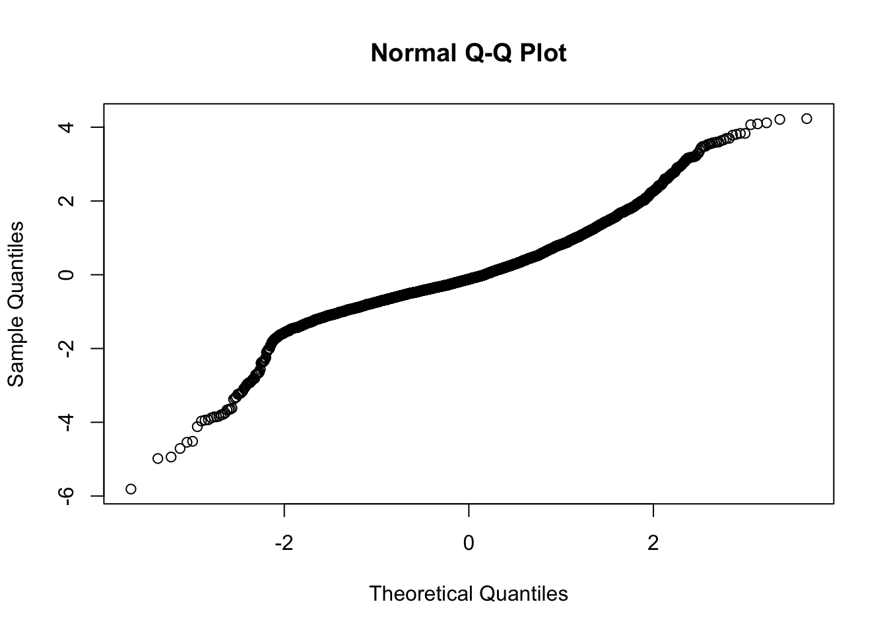
Evidence of small L tail. Although some evidence of heteroskedasticity and not perfectly normal residuals, I believe these are allowable for this model.
Model type: Linear mixed models, random intercepts for farm and cow will be fitted to account for repeated measures within cows, and clustering of cows within herds
Step 1: Identify potential confouders using a directed acyclic graph (DAG)
Step 2: Identify correlated variables using pearson and kendalls correlation coefficients
Step 3: Create model with all potential confounders
Step 4: Investigate potential effect measure modification
Step 5: Remove unneccesary covariates in backwards stepwise fashion using 10% rule (i.e. if estimated difference in milk yield changes by >10% after removing the covariate, the covariate is retained in the model)
Step 6: Report final model
Step 7: Model diagnostics
library(DiagrammeR)
mermaid("graph LR
T(Treatment)-->U(Milk yield)
A(Age)-->T
P(Parity)-->T
M(Yield at dry-off)-->T
S(SCC during prev lactation)-->T
C(CM in prev lact)-->T
D(Days in milk at test)-->U
D-->T
A-->U
P-->U
M-->U
S-->U
C-->U
C-->M
P-->C
P-->S
P-->M
A-->P
A-->C
A-->S
A-->M
M-->S
C-->S
style A fill:#FFFFFF, stroke-width:0px
style T fill:#FFFFFF, stroke-width:2px
style P fill:#FFFFFF, stroke-width:0px
style M fill:#FFFFFF, stroke-width:0px
style S fill:#FFFFFF, stroke-width:0px
style C fill:#FFFFFF, stroke-width:0px
style I fill:#FFFFFF, stroke-width:0px
style D fill:#FFFFFF, stroke-width:0px
style U fill:#FFFFFF, stroke-width:2px
")Parity [“Parity”] <- Age not offered as highly correlated
Yield at most recent test before dry off [“DOMY”]
Somatic cell count at last herd test during previous lactation [“DOSCC”] <- PrevSCCHI not offered as correlated
Clinical mastitis in previous lactation [“PrevCM”]
Days in milk at herd test (category, 0-20 “10”, 21-40 “30” etc) [“TestDIMcat20”]
mm0 <- lmer(MY ~ Tx + TestDIMcat20 + Parity + DOSCC + PrevCM + DOMY + (1|FARMID/CowID), data=SDCTCOWDHI)
summary(mm0)## Linear mixed model fit by REML ['lmerMod']
## Formula: MY ~ Tx + TestDIMcat20 + Parity + DOSCC + PrevCM + DOMY + (1 |
## FARMID/CowID)
## Data: SDCTCOWDHI
##
## REML criterion at convergence: 27948.5
##
## Scaled residuals:
## Min 1Q Median 3Q Max
## -6.3698 -0.4620 0.0223 0.5283 3.9851
##
## Random effects:
## Groups Name Variance Std.Dev.
## CowID:FARMID (Intercept) 28.70 5.357
## FARMID (Intercept) 9.63 3.103
## Residual 46.18 6.795
## Number of obs: 3990, groups: CowID:FARMID, 1177; FARMID, 7
##
## Fixed effects:
## Estimate Std. Error t value
## (Intercept) 30.22473 1.76719 17.103
## TxCulture -0.04144 0.46718 -0.089
## TxAlgorithm -0.92795 0.47146 -1.968
## TestDIMcat2030 11.86182 0.40548 29.253
## TestDIMcat2050 12.87916 0.38854 33.148
## TestDIMcat2070 12.51208 0.38249 32.713
## TestDIMcat2090 11.01316 0.41572 26.492
## TestDIMcat20110 8.43431 0.38401 21.964
## Parity2 2.52549 0.47112 5.361
## Parity3 3.01851 0.50067 6.029
## DOSCC 0.26481 0.19029 1.392
## PrevCM1 -0.24232 0.58620 -0.413
## DOMY 0.22068 0.02706 8.156car::vif(mm0)## GVIF Df GVIF^(1/(2*Df))
## Tx 1.009493 2 1.002365
## TestDIMcat20 1.002987 5 1.000298
## Parity 1.145893 2 1.034632
## DOSCC 1.308164 1 1.143750
## PrevCM 1.048252 1 1.023842
## DOMY 1.154875 1 1.074651
mm0 <- lmer(MY ~ Tx*FARMID + Parity + TestDIMcat20 + DOSCC + DOMY + PrevCM + (1|CowID), data=SDCTCOWDHI)
car::Anova(mm0)Significant interaction term.
Descision: Revisit this after covariates are finalized.
Tx:DIM category at herd test (P > 0.05)
mm0 <- lmer(MY ~ Tx*TestDIMcat20 + Parity + DOSCC + DOMY + PrevCM + (1|FARMID/CowID), data=SDCTCOWDHI)
car::Anova(mm0)
Tx:Parity (P > 0.05)
mm0 <- lmer(MY ~ Tx*Parity + TestDIMcat20 + DOSCC + DOMY + PrevCM + (1|FARMID/CowID), data=SDCTCOWDHI)
car::Anova(mm0)
Tx:PrevCM (P > 0.05)
mm0 <- lmer(MY ~ Tx*PrevCM + Parity + TestDIMcat20 + DOSCC + DOMY + (1|FARMID/CowID), data=SDCTCOWDHI)
car::Anova(mm0)
The order for removing covariates will be in increasing likelihood of being a confounder, which is based on my knowledge about the variables and their distribution in treatment groups.
This order will be: DOSCC, PrevCM, Parity, DOMY
TestDIMcat20 will not be removed (forced into model).
Step 5a: Full model
mm0 <- lmer(MY ~ Tx + PrevCM + Parity + TestDIMcat20 + DOSCC + DOMY + (1|FARMID/CowID), data=SDCTCOWDHI)
mm0 %>% tidy() %>% subset(select=c(term,estimate))
Step 5b: Removing DOSCC
mm0 <- lmer(MY ~ Tx + PrevCM + Parity + TestDIMcat20 + DOMY + (1|FARMID/CowID), data=SDCTCOWDHI)
mm0 %>% tidy() %>% subset(select=c(term,estimate))Changed by <10%. DOSCC stays out
Step 5c: removing PrevCM
mm0 <- lmer(MY ~ Tx + Parity + TestDIMcat20 + DOMY + (1|FARMID/CowID), data=SDCTCOWDHI)
mm0 %>% tidy() %>% subset(select=c(term,estimate))Changed by < 10%. PrevCM stays out.
Step 5d: removing Parity
mm0 <- lmer(MY ~ Tx + TestDIMcat20 + DOMY + (1|FARMID/CowID), data=SDCTCOWDHI)
mm0 %>% tidy() %>% subset(select=c(term,estimate))Changed by >10%. Parity stays in.
Step 5e: removing DOMY
mm0 <- lmer(MY ~ Tx + Parity + TestDIMcat20 + (1|FARMID/CowID), data=SDCTCOWDHI)
mm0 %>% tidy() %>% subset(select=c(term,estimate))Changed by >10%. DOMY stays in.
Effect measure modification with herd (P < 0.05)
mm0 <- lmer(MY ~ Tx*FARMID + TestDIMcat20 + Parity + DOMY + (1|CowID), data=SDCTCOWDHI)
car::Anova(mm0)Decision - will investigate effect estimates stratified by herd
Model output
mm0 <- lmer(MY ~ Tx*FARMID + TestDIMcat20 + Parity + DOMY + (1|CowID), data=SDCTCOWDHI)
emmeans(mm0,pairwise ~ Tx | FARMID)## $emmeans
## FARMID = 1:
## Tx emmean SE df asymp.LCL asymp.UCL
## Blanket 47.4 1.240 Inf 45.0 49.8
## Culture 49.7 1.162 Inf 47.4 51.9
## Algorithm 46.2 1.381 Inf 43.5 48.9
##
## FARMID = 2:
## Tx emmean SE df asymp.LCL asymp.UCL
## Blanket 49.6 1.200 Inf 47.3 52.0
## Culture 46.0 1.300 Inf 43.4 48.5
## Algorithm 43.4 1.188 Inf 41.1 45.8
##
## FARMID = 3:
## Tx emmean SE df asymp.LCL asymp.UCL
## Blanket 43.4 0.703 Inf 42.1 44.8
## Culture 43.8 0.701 Inf 42.4 45.1
## Algorithm 42.0 0.736 Inf 40.6 43.5
##
## FARMID = 4:
## Tx emmean SE df asymp.LCL asymp.UCL
## Blanket 53.3 0.565 Inf 52.2 54.4
## Culture 52.5 0.534 Inf 51.4 53.5
## Algorithm 53.2 0.558 Inf 52.2 54.3
##
## FARMID = 5:
## Tx emmean SE df asymp.LCL asymp.UCL
## Blanket 49.4 0.739 Inf 48.0 50.9
## Culture 49.9 0.712 Inf 48.5 51.3
## Algorithm 48.1 0.752 Inf 46.6 49.5
##
## FARMID = 6:
## Tx emmean SE df asymp.LCL asymp.UCL
## Blanket 49.2 1.515 Inf 46.2 52.1
## Culture 52.3 1.548 Inf 49.2 55.3
## Algorithm 50.7 1.698 Inf 47.4 54.1
##
## FARMID = 7:
## Tx emmean SE df asymp.LCL asymp.UCL
## Blanket 50.4 1.014 Inf 48.4 52.4
## Culture 49.4 1.066 Inf 47.3 51.5
## Algorithm 49.2 1.067 Inf 47.1 51.2
##
## Results are averaged over the levels of: TestDIMcat20, Parity
## Degrees-of-freedom method: asymptotic
## Confidence level used: 0.95
##
## $contrasts
## FARMID = 1:
## contrast estimate SE df z.ratio p.value
## Blanket - Culture -2.2771 1.693 Inf -1.345 0.3704
## Blanket - Algorithm 1.1734 1.848 Inf 0.635 0.8008
## Culture - Algorithm 3.4506 1.800 Inf 1.917 0.1337
##
## FARMID = 2:
## contrast estimate SE df z.ratio p.value
## Blanket - Culture 3.6627 1.767 Inf 2.072 0.0956
## Blanket - Algorithm 6.2020 1.686 Inf 3.678 0.0007
## Culture - Algorithm 2.5393 1.758 Inf 1.444 0.3182
##
## FARMID = 3:
## contrast estimate SE df z.ratio p.value
## Blanket - Culture -0.3310 0.990 Inf -0.334 0.9402
## Blanket - Algorithm 1.4086 1.015 Inf 1.388 0.3474
## Culture - Algorithm 1.7396 1.015 Inf 1.713 0.2002
##
## FARMID = 4:
## contrast estimate SE df z.ratio p.value
## Blanket - Culture 0.8679 0.770 Inf 1.128 0.4969
## Blanket - Algorithm 0.0873 0.786 Inf 0.111 0.9932
## Culture - Algorithm -0.7806 0.760 Inf -1.027 0.5600
##
## FARMID = 5:
## contrast estimate SE df z.ratio p.value
## Blanket - Culture -0.5102 0.985 Inf -0.518 0.8627
## Blanket - Algorithm 1.3592 1.015 Inf 1.339 0.3733
## Culture - Algorithm 1.8695 1.003 Inf 1.863 0.1495
##
## FARMID = 6:
## contrast estimate SE df z.ratio p.value
## Blanket - Culture -3.1044 2.164 Inf -1.435 0.3229
## Blanket - Algorithm -1.5474 2.273 Inf -0.681 0.7747
## Culture - Algorithm 1.5571 2.290 Inf 0.680 0.7753
##
## FARMID = 7:
## contrast estimate SE df z.ratio p.value
## Blanket - Culture 0.9515 1.467 Inf 0.649 0.7931
## Blanket - Algorithm 1.2379 1.468 Inf 0.843 0.6761
## Culture - Algorithm 0.2864 1.503 Inf 0.191 0.9802
##
## Results are averaged over the levels of: TestDIMcat20, Parity
## P value adjustment: tukey method for comparing a family of 3 estimatesIt appears that herd 2 (87 cows) and herd 6 (42 cows) have extreme results compared with the other herds. In herd 2, BDCT had much higher MY than SDCT cows. In herd 6, it was the opposite effect. Given these were the smallest herds in the study, I will report a pooled result.
Model output
summary(lmer(MY ~ Tx + TestDIMcat20 + Parity + DOMY+ (1|FARMID/CowID), data=SDCTCOWDHI))## Linear mixed model fit by REML ['lmerMod']
## Formula: MY ~ Tx + TestDIMcat20 + Parity + DOMY + (1 | FARMID/CowID)
## Data: SDCTCOWDHI
##
## REML criterion at convergence: 27949.8
##
## Scaled residuals:
## Min 1Q Median 3Q Max
## -6.3374 -0.4572 0.0207 0.5284 3.9942
##
## Random effects:
## Groups Name Variance Std.Dev.
## CowID:FARMID (Intercept) 28.677 5.355
## FARMID (Intercept) 9.946 3.154
## Residual 46.184 6.796
## Number of obs: 3990, groups: CowID:FARMID, 1177; FARMID, 7
##
## Fixed effects:
## Estimate Std. Error t value
## (Intercept) 31.61485 1.47112 21.490
## TxCulture -0.04671 0.46702 -0.100
## TxAlgorithm -0.92025 0.47129 -1.953
## TestDIMcat2030 11.86555 0.40548 29.263
## TestDIMcat2050 12.87773 0.38856 33.143
## TestDIMcat2070 12.51168 0.38250 32.710
## TestDIMcat2090 11.01773 0.41571 26.503
## TestDIMcat20110 8.43423 0.38402 21.963
## Parity2 2.66366 0.45780 5.818
## Parity3 3.20325 0.47445 6.752
## DOMY 0.20758 0.02539 8.175
##
## Correlation of Fixed Effects:
## (Intr) TxCltr TxAlgr TDIM203 TDIM205 TDIM207 TDIM209 TDIM201
## TxCulture -0.132
## TxAlgorithm -0.146 0.499
## TstDIMc2030 -0.144 -0.013 -0.012
## TstDIMc2050 -0.132 -0.010 -0.013 0.486
## TstDIMc2070 -0.135 -0.010 -0.004 0.534 0.481
## TstDIMc2090 -0.143 -0.005 -0.005 0.515 0.499 0.471
## TstDIM20110 -0.129 -0.008 -0.004 0.514 0.507 0.527 0.465
## Parity2 -0.167 0.055 0.021 0.000 0.008 -0.001 0.004 0.006
## Parity3 -0.173 0.013 0.018 -0.014 0.009 -0.009 0.012 -0.001
## DOMY -0.478 -0.065 -0.027 0.013 -0.002 -0.002 0.019 -0.014
## Party2 Party3
## TxCulture
## TxAlgorithm
## TstDIMc2030
## TstDIMc2050
## TstDIMc2070
## TstDIMc2090
## TstDIM20110
## Parity2
## Parity3 0.399
## DOMY 0.066 0.101Model output (tidy)
lmer(MY ~ Tx + TestDIMcat20 + Parity + DOMY + (1|FARMID/CowID), data=SDCTCOWDHI) %>% tidy(conf.int=TRUE)mm0 <- lmer(MY ~ 1 + (1|FARMID/CowID), data=SDCTCOWDHI)
summary(mm0)## Linear mixed model fit by REML ['lmerMod']
## Formula: MY ~ 1 + (1 | FARMID/CowID)
## Data: SDCTCOWDHI
##
## REML criterion at convergence: 29310.2
##
## Scaled residuals:
## Min 1Q Median 3Q Max
## -5.1211 -0.4867 0.0849 0.5681 3.5617
##
## Random effects:
## Groups Name Variance Std.Dev.
## CowID:FARMID (Intercept) 27.03 5.199
## FARMID (Intercept) 10.06 3.172
## Residual 70.88 8.419
## Number of obs: 3990, groups: CowID:FARMID, 1177; FARMID, 7
##
## Fixed effects:
## Estimate Std. Error t value
## (Intercept) 48.286 1.226 39.38ICC (CowID) = 0.25 ICC (FARMID) = 0.09
Emmeans without TestDIM interaction
mm0 <- lmer(MY ~ Tx + TestDIMcat20 + Parity + DOMY+ (1|FARMID/CowID), data=SDCTCOWDHI)
emmeans(mm0,~Tx) %>% tidyModel output
summary(lmer(MY ~ Tx + TestDIMcat20 + Parity + (1|FARMID/CowID), data=SDCTCOWDHI))## Linear mixed model fit by REML ['lmerMod']
## Formula: MY ~ Tx + TestDIMcat20 + Parity + (1 | FARMID/CowID)
## Data: SDCTCOWDHI
##
## REML criterion at convergence: 28009.3
##
## Scaled residuals:
## Min 1Q Median 3Q Max
## -6.2353 -0.4645 0.0246 0.5246 3.9839
##
## Random effects:
## Groups Name Variance Std.Dev.
## CowID:FARMID (Intercept) 31.11 5.578
## FARMID (Intercept) 11.14 3.338
## Residual 46.17 6.795
## Number of obs: 3990, groups: CowID:FARMID, 1177; FARMID, 7
##
## Fixed effects:
## Estimate Std. Error t value
## (Intercept) 37.3558 1.3606 27.456
## TxCulture 0.2008 0.4792 0.419
## TxAlgorithm -0.8169 0.4844 -1.687
## TestDIMcat2030 11.8422 0.4064 29.139
## TestDIMcat2050 12.8803 0.3890 33.113
## TestDIMcat2070 12.5248 0.3830 32.704
## TestDIMcat2090 10.9596 0.4165 26.315
## TestDIMcat20110 8.4713 0.3844 22.040
## Parity2 2.4166 0.4697 5.145
## Parity3 2.8034 0.4853 5.777
##
## Correlation of Fixed Effects:
## (Intr) TxCltr TxAlgr TDIM203 TDIM205 TDIM207 TDIM209 TDIM201
## TxCulture -0.182
## TxAlgorithm -0.177 0.499
## TstDIMc2030 -0.150 -0.012 -0.012
## TstDIMc2050 -0.144 -0.010 -0.013 0.486
## TstDIMc2070 -0.147 -0.010 -0.004 0.535 0.480
## TstDIMc2090 -0.145 -0.004 -0.005 0.515 0.499 0.470
## TstDIM20110 -0.147 -0.009 -0.005 0.515 0.507 0.528 0.464
## Parity2 -0.151 0.059 0.022 -0.001 0.008 -0.001 0.003 0.006
## Parity3 -0.139 0.019 0.021 -0.015 0.009 -0.008 0.010 0.000
## Party2
## TxCulture
## TxAlgorithm
## TstDIMc2030
## TstDIMc2050
## TstDIMc2070
## TstDIMc2090
## TstDIM20110
## Parity2
## Parity3 0.395
mm0 <- lmer(MY ~ Tx + TestDIMcat20 + Parity + DOMY + (1|FARMID/CowID), data=SDCTCOWDHI)
atx <- c(10,30,50,70,90,110)
emm <- emmeans(mm0, ~Tx*TestDIMcat20) %>% tidy()
emm$MY <- emm$estimate
emm$LCL <- emm$asymp.LCL
emm$UCL <- emm$asymp.UCL
emm %>% subset(select=c(Tx,TestDIMcat20,MY,LCL,UCL))Plotting model as predicted values
curve <- ggplot(emm) + coord_cartesian(ylim = (c(0,55))) + aes(x=TestDIMcat20, y=MY, group=Tx, colour=Tx) + geom_point() + geom_line(aes(colour=Tx,linetype=Tx)) + geom_ribbon(aes(ymin=emm$LCL, ymax=emm$UCL,colour=Tx,fill=Tx), linetype=0, alpha=0.1)
curve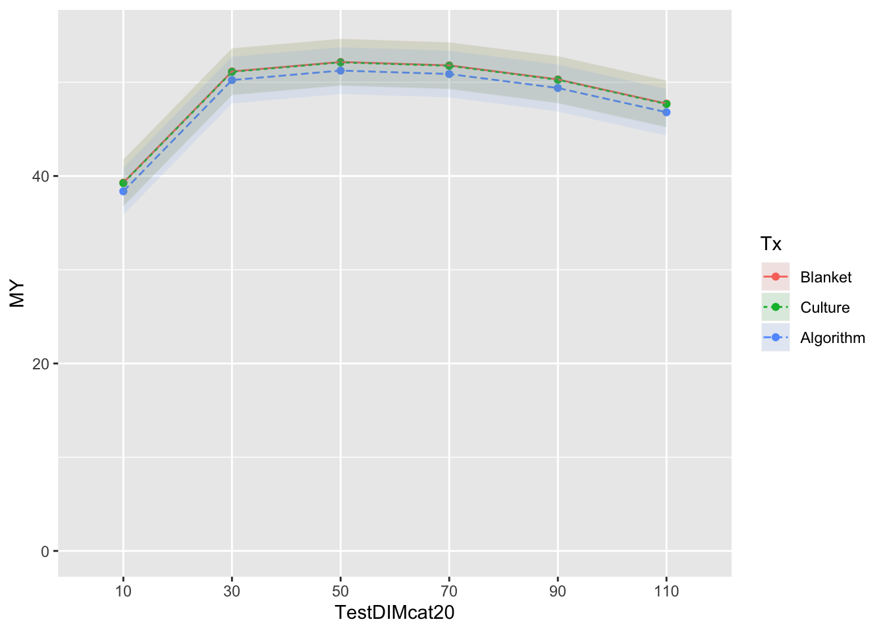
Reported as estimated marginal means by test day category with interaction with herd test DIM
mm0 <- lmer(MY ~ Tx*TestDIMcat20 + Parity + DOMY + (1|FARMID/CowID), data=SDCTCOWDHI)
atx <- c(10,30,50,70,90,110)
emm <- emmeans(mm0, ~Tx*TestDIMcat20, at=list(atx)) %>% tidy()
emm$MY <- emm$estimate
emm$LCL <- emm$asymp.LCL
emm$UCL <- emm$asymp.UCL
emm <- emm %>% subset(select=c(Tx,TestDIMcat20,MY,LCL,UCL))
curve <- ggplot(emm) + coord_cartesian(ylim = (c(0,55))) + aes(x=TestDIMcat20, y=MY, group=Tx, colour=Tx) + geom_point() + geom_line(aes(colour=Tx,linetype=Tx)) + geom_ribbon(aes(ymin=emm$LCL, ymax=emm$UCL,colour=Tx,fill=Tx), linetype=0, alpha=0.1)
curve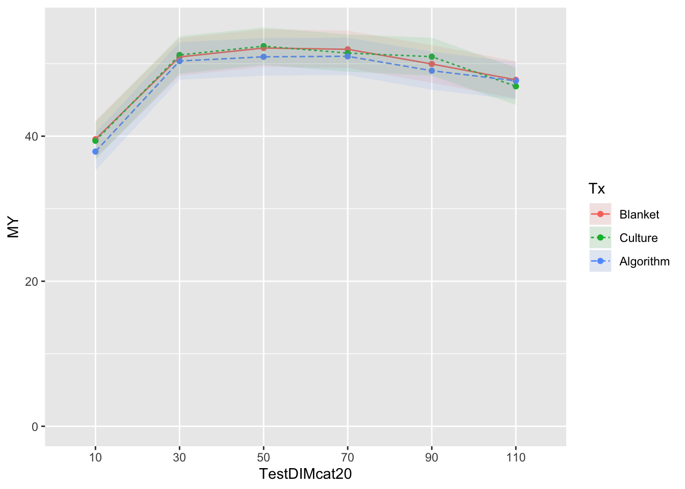
Checking homoskedasticity assumption (variance of residuals)
mm0 <- lmer(MY ~ Tx + TestDIMcat20 + Parity +DOMY+ (1|FARMID/CowID), data=SDCTCOWDHI)
ggplot(data.frame(eta=predict(mm0,type="link"),pearson=residuals(mm0,type="pearson")),
aes(x=eta,y=pearson)) +
geom_point() +
theme_bw()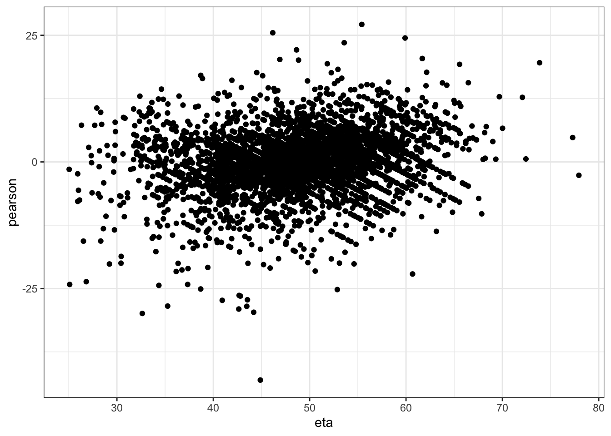
Checking normality of residuals
qqnorm(residuals(mm0))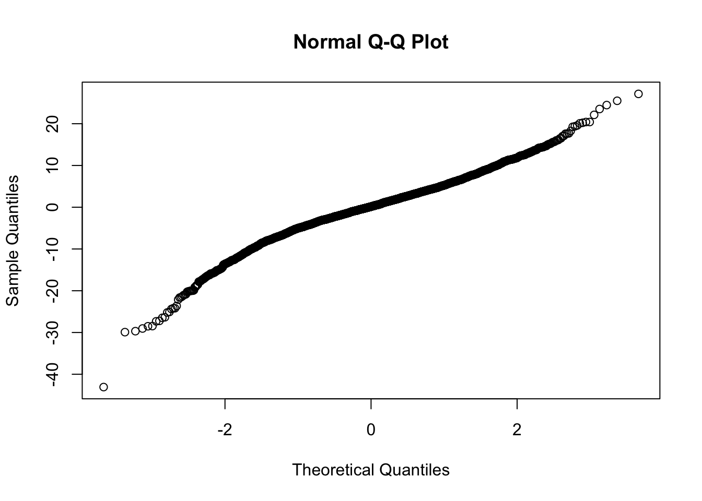
I am happy with homoskedasticity and normal residuals assumptions